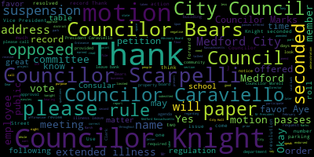
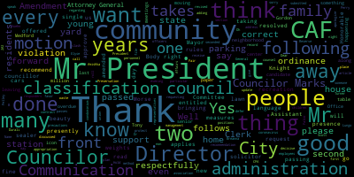
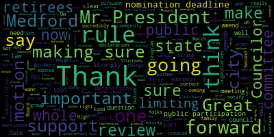
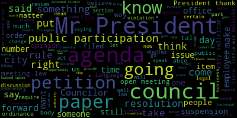
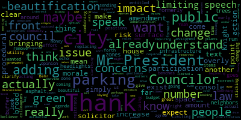

AI-generated transcript of City Council 03-10-20
Back to all transcripts
[Falco]: The ninth regular meeting in the Bedford City Council will now come to order. Clerk Urdobez, please call the roll.
[Hurtubise]: Councilor Bears. Present. Vice President Caraviello. Present. Councilor Knight. Present. Councilor Marks. Present. Councilor Morell. Present. Councilor Scarpelli. Councilor Scarpelli. Here. President Felton.
[Falco]: Present. All seven members are present. At this time, I'd ask everyone to please rise to salute the flag.
[SPEAKER_13]: I pledge allegiance to the flag of the United States of America, and to the republic for which it stands, one nation, under God, indivisible, with liberty and justice for all.
[Caraviello]: 20-097 offered by President Falco be it resolved that the administration update the City Council on the precautions and The administration is taking a decisive method to protect our residents, in particular, our children, seniors, and first responders from the coronavirus.
[Falco]: Thank you, Vice President Caraviello. Thank you, Vice President Caraviello. I've been receiving many calls from people throughout the community regarding coronavirus. And we have basically, if you're online or you're watching TV, everyone is talking about it. concern, a real concern throughout our community, throughout our country. And so we have a number of people here from the administration tonight that would like to speak and give us more information as to what the administration is doing with regard to coronavirus and how we're moving forward and if they could please come forward at this time.
[Caraviello]: If we could have someone from the administration please speak.
[Falco]: Thank you.
[Caraviello]: Good evening. Name and address of the record, please. All right, good.
[Dave Rodriguez]: Thank you, Mr. Vice President. Everybody, am I good? Thank you. And thank you, Mr. President, for putting this item on the agenda this evening. Dave Rodriguez, Chief of Staff, Office of the Mayor. I'm joined tonight by Mary Ann O'Connor, who's the Director of the Board of Health. This is an issue that the mayor's office and the mayor specifically is taking super seriously. We spent a lot of staff time over the past couple of weeks. I was encouraged to see the piece on the agenda this evening. So we got together in order for us to update the community and update the council on some of the things that the administration's doing in order to increase our preparedness with regard to the situation. So I'll hand it off to Marianne and we can go back and forth, have a conversation about the administration's situational response to the issue.
[O'Connor]: Good evening. Thank you for having us here this evening. So yes, this is a true public health concern, and while here in Medford the risk still remains low, it is certainly something we're taking very, very seriously, and we know it's an evolving situation that could change at any time. So for several weeks now, my department has been on weekly phone calls with the CDC, the Centers for Disease Control, as well as the Mass. Department of Public Health, discussing guidance and preventing measures we could take. At this point, we're really beyond containment and at mitigation statewide and nationwide. Obviously, as you've heard, the best precautions, the best prevention is wash your hands, hand sanitizer, cough etiquette, stay home if you're sick, which we're also talking about in real discussions around what we call non-pharmaceutical interventions. The best one of those is what's called social distancing. So, examples of social distancing you've seen already in the news, those are your travel restrictions. You saw the governor today saying that he's going to halt seminars and conferences and travel. Going forward, these are things that we're gonna need to discuss around social distancing and what does that mean for Medford? Does that mean we have to really start looking hard and seriously at canceling some events that may be difficult? but certainly necessary for the good of the citizens of Medford and for our safety. So we've also met with local emergency personnel and a couple of weeks ago at a department head meeting, we really started the conversation around what's called continuity of operations and really asked department heads to start thinking about what happens in their department. What are the essential functions of their department that we need to continue to do to serve the citizens of Medford? But what are those functions that if we get really thin, if absenteeism really hits the roof and we're not able to do, what are those functions that we can temporarily suspend? What are those functions that some of your employees could do remotely from home? And to really have department heads start thinking about, what if they get sick? Who's in charge? Who's the next in charge? Who's the next after that? So those efforts are underway. We're really going to be honing down on department heads to really come up with those plans. They're called COOP plans. And so we're working with them on those. We also have another meeting scheduled tomorrow with all the emergency management personnel going forward to start making plans. been training and talking with first responders and looking to make sure they have the proper equipment as you've all heard. masks are scarce, so we've been gathering up what we can. Right now we think we're good, but obviously going forward, it was good to hear in the governor's news conference today that they have some PPE coming in from the national stockpile. Hopefully that will trickle down to communities as well, because if this thing keeps evolving, we're probably going to need those supplies. The school department we've been in close contact with every day. I have my morning call with the school department. And as you know, you've seen efforts that we've taken there as well. And some of those are social distancing efforts, like what happened with the teachers who had returned from those countries. So any other questions, anything I've missed?
[Dave Rodriguez]: So just briefly, as it was released today, and we did do some extensive outreach this afternoon, there has been a presumptive positive test for a case in the city of Medford. We release that information, we're certainly not obligated, and we spoke with DPH regarding the release of that information. It's our commitment to give the information to the public as much as we can, as quickly as we can, in order to one, make sure that they have the information. Second of all, to make sure that they're advised of some of the mitigation and the general precautions, the hand washing, the disinfecting. the social distancing, some of those efforts, and also to alleviate concerns. We truly understand how much anxiety this is driving for the public in general, and we want to make sure more information is always going to be better than less, and any information that we can give, we want to give. Of course there is information we can't. There's privacy concerns that are in play, identities, locations, exact circumstances of attraction, stuff to that concern. We work closely together. I think Marianne spent three or four hours in my office today strategizing on these things, working on these things. All department has been instructed in order to do coup planning in order to ensure the delivery of services, identification of essential functions and essential personnel in order to make sure the government keeps running, that we can continue to provide these services. So the mayor is. I can't stress this enough, is that the mayor's commitment to transparency regarding this issue is paramount. And every piece of information that we can give, we are going to give as quickly as possible. We think that can mitigate and contain the spread. It's beyond the point of being able to stop it. We have to try to mitigate what's going to happen now. So the meeting that's going to take place with emergency management personnel is going to be very important for us tomorrow so that we can rely on the guidance that's been given by Department of Public Health, CDC, the governor's office, the Declaration of the State of Emergency, and analyze that for how we can adapt those plans. Public safety dispatchers have been given protocols as to what to do and what questions to ask if somebody calls 911. Regarding an issue like this, too, in order to protect the first responders that are responding. Protocols have been put in place for fire and police for them as they respond to make sure that they're insured safe. Kirkland Washington was a perfect example. We took some really hard lessons from them. they have 25 firefighters stuck in a firehouse as quarantine because they all rushed in because that's what they're trained to do. If somebody's in trouble, they want to go help. So we have to slow things down a little bit in that regard to make sure that the firefighters stay safe, the first responders stay safe, ambulance stay safe. We're trying to be as thoughtful as we can in this approach.
[O'Connor]: And we do have the public information set up on the website. We would refer people for more information to go to the city website. And as well as the DPH website and the CDC website for guidance.
[Dave Rodriguez]: We have some very helpful frequently asked questions that are on the website. Trying to make it as simple as we can for folks that we brainstorm. What questions would we ask if we were on the outside looking in on some of these issues that we're constantly updating, we're constantly trying to be responsive and kind of adjust. The ground is shifting on us a lot. So we're trying to be responsive to that as well.
[Falco]: Thank you very much for your briefing. Very informative. I watched the school committee last night, the school committee meeting, and that was, they talked about what they were doing in the schools, and that was very informative as well. So if we take a look at, you know, our different public buildings throughout our community. So if we take a look at, you take a look at our schools. You know, they talked about, I think it was a GENEO machine that comes in and sanitizes. Okay, they talked about that now it sanitizes the classrooms and stuff like that, which is great And I know they have a they've had one deep cleaning and I think another one scheduled soon Okay, so so which is I Great. As a parent, that's what I want to hear that, you know, our school spaces are clean. And so what about our other public buildings like City Hall, the library, senior center, those being cleaned as well and scrubbed down and whatnot?
[Dave Rodriguez]: Sure. All those buildings are regularly cleaned. And I do know that the bathrooms here at City Hall were deep cleaned recently. But that is going to be a subject, a point of discussion tomorrow about how we approach that and how we contract out to make sure that gets done.
[Falco]: Okay, great. I mean, when I look at the library and I look at the senior center, I look at the City Hall, you know, I mean, there's hundreds if not thousands of people utilizing these spaces, you know, on a weekly basis. So, we just want to make sure that, you know, we're, you know, keep our schools clean, of course, but also, you know, public spaces or public buildings. So, thank you very much for your information. Appreciate all your help.
[Dave Rodriguez]: We are available all the time. Please email the mayor's public email address if there is any questions. We're happy to be a resource for the public. We understand how much how how concerning this is for the public because we're part of the public. So we're concerned, too. So we genuinely want to be as informative as we can.
[O'Connor]: People can call my office anytime as well. Thank you very much.
[Dave Rodriguez]: Thank you.
[Bears]: Thank you, Mr. Vice President. Just two quick questions. First, how does, you mentioned personal protective equipment and some other stuff, what ways does the Governor's declaration of a state of emergency affect how we were preparing up until this afternoon when he declared it?
[O'Connor]: As far as PPE goes?
[Bears]: Or just in general. You mentioned PPE as one example, is there other?
[O'Connor]: So I wanted to say that Monica Burrell, who's the DPH Commissioner, she mentioned on the conference call, the conference this afternoon that they had already put in a request to the national stockpile for additional PPE and supposedly was on its way. So that's what I was referring to there. But we've been basically following the same guidance that has been put out from day one from DPH and CDC. And that guidance has changed and evolved. But that's been constantly monitored and constantly, you know, in touch with them. And any questions we have, they've been very responsive as well. We're all just really keeping a close eye on what's going on.
[Bears]: So, but just the declaration of emergency is an indication of more resources coming to help, not necessarily.
[O'Connor]: For the state it's more, yeah, and it's, it's, uh, it's going to be quicker for the, for the governor to get things done and maybe to waive certain things and to be able to cancel a large assemblies and to be able to act, um, you know, uh, more swift than he would have been able to before.
[Bears]: Got it. Um, and then, um, have you discussed or tomorrow are you planning to discuss any guidance for public bodies in terms of meeting. So we're all here right now. Other committees and groups meet as well. So it'll be we'll have a uniform guidance from for the city for bodies and from public health.
[Dave Rodriguez]: Yeah.
[Bears]: Great. Thank you so much.
[Scarpelli]: Thank you Mr. President. If I can, there were some concerns earlier. I know there are some limitations, we do have limitations of the information we can give about the person that has already been diagnosed and found to have the virus. Is it safe to say or could we say that it has nothing to do with the schools? Because I think that was one of the concerns. Because I think the kids right now, they're feeling anxiety probably more than anybody right now. So just making sure if we could just say it has no one to do with the schools and we're safe from the schools.
[Dave Rodriguez]: has had no contact with school-aged children. So a full investigation is normally done with these by the Board of Health and with our partners to ask these tough questions at the time. We check on that individual often every couple hours. What's your fever? What's your temperature? How's your condition? Have you had any contact with anybody? And so we're asking these questions constantly to ensure that specific concern.
[Scarpelli]: Thank you so much.
[Caraviello]: On the motion by Councilor Knight to receive and place this on file, second and by? Second. My counsel, Dr. Pelley, all those in favor? Motion passes.
[Alonzo]: While we're under suspension. Which one, 2-8? 2-0, 2-8-2 while under suspension.
[Caraviello]: Communications from the Mayor. Dear Mr. President and City Councilors, I respectfully request and recommend that Your Honorable Body approve the following recommendation of the Community Preservation Committee, requesting the appropriation of $3,000 from the CPA General Reserve to Elyse Turner and Amishka Durali in association with the- Mr. President, if I may. Oh, I'm sorry. I apologize. 2A2, give us a presence in council. I respectfully request and recommend that your honorable body approve the following amendments to the revised ordinance entitled personnel article two, classification and communication plan section 66-33 entitled officers and employees non-union by adding new positions of Director of Communications and Director of Community Fair to the following classifications. Amendment A, classification CAF-15 presently states that it applies as follows. CAF-15, sealer of weights and measures slash recreation director. The language of CAF-15 shall be amended to read as follows. CAF-15, sealer of weights and measures Recreation Director, Director of Communications. Amendment B. Classification CAF 11 presently states that it applies as following. CAF 11, Assistant City Clerk. The language of CAF 11 shall be amended to read as follows. CAF 11, Assistant City Clerk, Director of Community Affairs. Respectfully submitted, Breanna Lungo-Koehn, Mayor. Councilor Knight. Mr. President. Hold on one second. I know we do have representatives from the administration here,
[Knight]: I'm on? I'm on now, okay. Mr. President, thank you very much. I do know we have representatives from the administration here as well. In my conversation with the mayor earlier this afternoon, it's my understanding that these two amendments would create classifications that are more in line with the functions and responsibilities that these individuals are performing in their office. The first amendment, amendment A, for director of communications, it's my understanding, would be a reflective title of the position that was held by Ms. Devaney. under the previous administration. And it's also my understanding that the Director of Community Affairs position under Amendment B would be reflective of the position that Ms. Fisk held under the previous administration. So what this is, Mr. President, is actually bringing their functional titles to be in line with the duties and responsibilities. But I won't steal Dave's thunder. Let him give us a brief synopsis of what's going on. I'd appreciate it.
[Dave Rodriguez]: I couldn't have said it better. I think that's exactly right. So we took a hard look at this, and this was This is in line with the mayor's vision for the mayor's office, and kind of being more transparent. Again, you're going to hear me say that quite a bit, of what the duties and responsibilities are. These jobs were both posted. Job descriptions are available for anybody that would like to take a look at them. But it's exactly like Councilor Neilsen.
[Knight]: Yeah, Mr. President, if I may, I spoke with the mayor last Thursday or Friday about the same issue, requested job descriptions. I know she forwarded them to the city clerk's office, and the city clerk had distributed them to the members of the body as well. I, for one, Councilor, I don't see any issue with this paper. I think that the mayor deserves the right to be able to surround herself with her own team for what she feels is going to make her time in the corner office successful. So with that being said, I move for approval of the paper, Mr. President. It is an ordinance, so it's going to have to go through three readings.
[Morell]: Thank you, Mr. President. I just wanted to clarify. So these don't have any impact on the budget as far as these changes. These are simply entitled only, and they don't remove any other. They're not replacing any other positions, correct?
[Dave Rodriguez]: No, these are lateral. So the effect on the budget is to be determined. We're modeling that stuff out now. Determine because it's when when there's a transition it's often hard to model exactly how what the year-end is going to look like Based on transitions and vacation buyouts and other issues that are involved with the budget So we're doing our best to model that out and make this as budget Softening as possible. Okay. Thank you.
[Caraviello]: Thank you On the motion by councillor night seconded by councillor Scott Perry. Mr. Clerk, please call the roll Yes
[Hurtubise]: I'm sorry, I got to call you last. Okay. Councilor Knight? Yes. Councilor Marks? Yes. Councilor Morell? Yes. Councilor Scarpelli? Yes. Councilor Thompson? Yes. And Vice President Caraviello?
[Caraviello]: Yes. 70 to defer, motion takes.
[Marks]: Mr. President, while we're in the suspension.
[Caraviello]: Well, yes.
[Marks]: Paper 20-094.
[Caraviello]: 20-094 offered by Councilor Marks be it resolved that the waste management contract be discussed regarding condominium participation. Click your button. There we go. Councilor Marks.
[Marks]: Thank you, Mr. President. I put this on tonight's agenda because I had several residents that reside in condos, in particular Maple Park condominiums that reached out to me recently regarding waste pickup. And they asked me the question, which I've actually received over the years from other condo people in the community, why don't they pick up my trash, the city? We pay the same tax rate that any other good paying taxpayer pays in this community, and we don't get trash service. So I did a little homework, Mr. President. We have probably about eight or nine residents from Maple Park, and I appreciate they all came out tonight. because this issue is very important to them. But I did a little homework, Mr. President, pulled out the contract that was signed by the city of Method and Waste Management back in August of 2010, August 25th to be precise. It was a ten year contract which actually ends this year. And it's my understanding in talking to DPW, what resulted from the contract back in 2010 was the city went around to all the different condo associations. And they touched base with each condo association, saying, we're signing an agreement with waste management. It's going to be a 10-year agreement. Are you interested, as an association, to have either recycle or trash pickup at your building? And for a number of different reasons, many associations said, you know what, we are interested in having both. And the city added their condo to the contract, which I have a copy of all the condominium associations and whether or not they get trash, recycle, a combination or none. And so at the time, they went around to all the condos. Some condos, like Maple Park Condo, opted at the time not to do trash pickup. They currently have recycle pickup, but not trash. And it was based on, I guess, the board of directors of the condo association, and they decided not to do it. But within the contract, Mr. President, and I won't read it, it's a lengthy contract, but on page six of the contract under section 12, It states the contractors shall collect refuse weekly and recyclables every other week from condominiums as listed on exhibit D. And that's what I refer to. Exhibit D shows you all the different condo buildings and whether or not they have recycle or trash. It says, Exhibit D, as from time to time may be amended subject to compensation as specified in Section 23.3, condominiums will be required to provide rubbish dumpster and recycling cots compatible with contractor's vehicles at their own cost. Condominiums that require services greater than specified herein will be directed to purchase additional service outside of this agreement from a vendor of their choice. So at the time, Mr. President, Maple Park Condo, and like I said, there are other condos that are in the same boat, decided not to do the trash pickup. And then some years later, they say, you know what? At this point, we'd like to start trash pickup with the city. And I'm being told from the DPW department that in order to do so, if Maple Park wanted to join the contract, they can do it one of two ways. They can ask during budget period, which is coming up very shortly, to have the city, because we have a fixed amount every year that we put into the waste management contract, and if we were going to bring on a new condo association, that would increase the contract amount, naturally, that we would have to add to the budget based on the newcomers into the program. So that would be the first way. If Maple Park and other condos said, you know what, we'd be interested now in joining, please sign us up. The city would have to make compensation within the budget to account for that. The second way, Mr. President, is the way of The contract ends in 2020. So it ends this year. It's a 10-year contract. It ends this year. And I'm not sure how this new administration will go about doing this, but I would assume it might be similar to what they did 10 years ago and reach out once again to all the condo associations in the city and saying, would you like to participate? And we can gather a new list at the end of this contract, which is this year, and have the city fund this brand new list. I'm being told also in the past, over the last ten years, based on a by request, the past mayors If an association went to the previous mayors, they would make their case for why they need recycling or trash pickup through the city, and the mayor would grant it or not grant it. And I've been told that in the past, there have been condo associations that have been granted this additional pickup service through the mayor's office. So I'm offering tonight, Mr. President, a way that not only Maple Park, but the other condominium associations that I have on this particular list, like Craddock Cove, I think the Regency Condo, Wellington Condo, there's a number of other condos in the city that may opt to participate. So I'm asking through this resolution, and I'd like to hear from some of the residents also, Mr. President, that the mayor determine how she wants to handle it. If she wants to do it in this year's budget, we have to make sure that the condos that want to participate make it known and that we add that to the budget or if the mayor feels best that we wait out the five or six or seven months that are left in this 10-year contract and then just see if anyone else wants to join. That may be an easier way, Mr. President, but I'll leave that up to the administration. That's not up to me to decide. But based on my findings, Mr. President, the contract, in my opinion, does call for allowing newcomers into the contract. And it does state there'll be an associated cost for a newcomer. It also states if you have a large condo and you need more than the one pickup, which may be the case in some of the larger condos, that that's added at your own expense. And that's spelled out in the contract. But my hope tonight, Mr. President, is really to put everyone on the same playing field. You know, we all pay taxes. I've had people in the past say, I pay taxes for school, but I have no school-aged kids. That's not how we work in the city of Method, Mr. President. We all pay a tax. We all should receive the service. And there's no reason why the condo associations and people that live in condos and pay the same tax shouldn't get that same service, Mr. President. Another issue too, Mr. President, if you don't have trash pickup, you're not eligible for bulk pickup. So someone that lives in a condo that wants to dispose of a bureau or a mattress or something, they're not eligible for the pickup that every other resident is eligible for. And that's unfair too. So I'll have residents, one resident told me he had to take his mattress over to his friend's house. This gentleman is not a spring chicken, Mr. President. And to have him get in his car and bring his mattress over to a friend's house is unacceptable. And they should be added, Mr. President, as well to the bulk pickup. So I'd like to hear with some of, I know Cindy Watson's here, with a number of residents. And I would offer that in the form of a motion, Mr. President, that either suggestion be entertained by the mayor to ensure that Maple Park Condo and any other condo in the city that opts to enter into the program is able to do so.
[Falco]: Thank you, Councilor Marks. Thank you. On the motion of Councilor Marks, seconded by Councilor Knight, can we please have your name and address for the record?
[Watson]: Yes, Cindy Watson, 65 Valley Street. First, I just want to preface this by saying thank you, Michael. Michael has had an ongoing dialogue with many of the people at Maple Park. And just by mere fact alone tonight, there are 44 owners, residents at Maple Park, and we have more than 20% represented tonight. So that shows you, illustrates the commitment. Now, again, we're not asking for anything extra. It's just sort of an equitable situation that has been overlooked. We do have one of the residents who was on the Medford Coalition condo a few years ago and did meet with former Mayor Michael McGlynn, and it was to be resolved that bulk pickup would happen. Unfortunately, I'm not sure what happened. It went through the loophole. We don't have it. Again, just to go back to what Michael said, over 40%, probably closer to 50% of the residents in Maple Park are senior citizens. We just had a situation where there was an older couple who just moved in, and it really caused a lot of disharmony because they didn't know the rules. It was about a mattress pickup, and the boat pickup should be something that is allowed for everybody. And again, you know, we pay taxes. We all have a beneficial interest in being an owner at Maple Park. Folks love Maple Park, and I can assure you, we follow the rules. When people come to visit me, I say it's a combination of a convent and a prison because we're so quiet. We follow the rules. We just want to follow the rules, and we want some level of, you know, reciprocal interest back so that we are able to get bulk pickup.
[Falco]: Thank you. Would anyone else like to speak on this issue? Any questions from the council? Come on, don't be shy. Come on. Don't be shy. Name and address for the record, please.
[Eddy]: My name is David Eddy. I'm a resident at Maple Park Condos. I was also a co-chair of the Medford Condominium Coalition, which petitioned the city to pick up trash or condominiums throughout the city. At the time this contract was signed, we would have had to rent two dumpsters from waste management, because our dumpsters apparently are not compatible with the pickup trucks of waste management. The cost for renting those two dumpsters exceeded the cost of the private contract that we had for picking up the trash. So we still pay property taxes, like all good people do. Included in that tax is trash pickup services. We chose to go with the private pickup because of the cost, being less expensive than waste management. So we're still paying for trash pickup, and I don't see why we can't have the bulk items picked up at no cost to us. Thank you.
[Falco]: Thank you. Would anyone else like to speak on this issue?
[Watson]: Thank you again, Michael.
[Falco]: Please have your name and address for the record.
[Mulvey]: Paul Mulvey. I'm a resident of 65 Valley Street, Maple Park condos. And one of the things I just want, we have rules and regulations as everybody else does. And part of our, one of our rules stipulates the trash pickup. And it's a whole page and it tells us who to call. We've had this for years. Now we're talking about bulk pickup. We may use this I'm going to say at the end, eight times a year. I'd say between six and eight. We pay between $125,000 and $140,000 in taxes. So we're just looking for a little fairness in really what we've had before. Nobody can tell me how it stopped. I know we do have something, notes about a meeting with Mayor McGlynn. But this is 10 years old. We haven't had any problems. We've called these people. They said leave it at the curb, whatever it was, two weeks from then. Then all of a sudden, I would say a couple of years ago, nothing. And it's stupid. It sounds silly that every time we have a problem, we've got to run down to City Hall and get in touch with The mayor, if we can't get in touch with anybody else, because these people don't talk to us, they just say no. Well, just saying no isn't what we're looking for. But we have other documentations and stuff too. That's my pitch.
[Falco]: Thank you very much.
[Marks]: Mr. President, just if I could follow up. I think part of the issue, from my understanding of talking to DPW, is that the city pays hundreds of thousands of dollars a year just for the bulk pickup contract. And at some point, it was determined that if you didn't have trash pickup, that you weren't going to be eligible for bulk pickup. And I'm not sure where that decision was made, if it was a unilateral decision or what. I didn't see it in the contract, but I was told by DPW, if you don't have trash pickup, they're not going to pick up bulk. And I think that was a way of trimming down the exorbitant cost of the bulk items. I believe they said they paid $22 an item in the city for bulk pickup, and it's unlimited. They only do it during the recycle period, so it's every two weeks they do the bulk pickup. But I think that was a way of cutting cost, and that may have been when they cut the service off to Maple Park during that. I'm not sure exactly when it happened. But the reason why I brought up, Mr. President, is to ask these questions. And have the administration, we have the chief of staff here, Dave Rodriguez, who I'm sure will take this back to the mayor regarding this issue. Mr. President, and we'll be able to get an answer. Thank you.
[Falco]: Thank you, Councilor Marks.
[Marks]: Thank you.
[Falco]: Before I call the roll, would anybody else like to speak on this issue? Good? Okay, great. Great, thank you again. Thank you for coming down tonight. Clerk Hertoghese, could you please read back the amendment?
[Hurtubise]: Council marks the amendment is to ensure that Maple Park or other condominiums can enter into the trash pickup agreement with waste management And then do you want it delineated by the two different options, or just at the administration's discretion?
[Marks]: We can offer those two different options to make, because it could be done in other ways, too. Those are the two that were stated to me. Adding to this year's budget, or when the contract turns out, which is at the end of this year, that all the economy associations be out with their options.
[Falco]: On the motion of Councilor Marks. Seconded by Councilor Knight. As amended by Councilor Marks, a roll call vote has been requested. Clerk Curtis, would you please call the roll?
[Hurtubise]: Councilor Bears? Yes. Vice President Caraviello? Yes. Councilor Knight? Yes. Councilor Marks? Yes. Councilor Morell?
[SPEAKER_05]: Yes.
[Hurtubise]: Councilor Scarpelli? Yes. President Falcon?
[Falco]: Yes. Seven in the affirmative, zero in the negative, the motion passes. Thank you. While we're under suspension, Councilor Bears. While we're under suspension, 20-283. March 5th, 2020, via electronic delivery to the Honorable President and members of the Medford City Council, City Hall, Medford, Massachusetts, 02155. Communication. Dear Mr. President and city councilors, I respectfully request and recommend that the city council approves the appropriation of free cash in the amount of $47,400.00 to fund the assessor's data valuations. The balance of free cash before this vote is $10,478,681. Alicia Donnelly Benjamin, Finance Director, is present to answer any of the questions, any of the Council's questions regarding this matter.
[Brito]: Good evening. Good evening. Ellen Brito, Chief of Staff. I really like Dave's job. I'm chief assessor. I get so nervous up here. Alicia's out sick, and so I'm here on behalf of. Thank you. She has been to the doctors. She's doing well. She'll be back to work on Thursday. But she's following the directive of if you don't feel good, stay home, which is a good point. Yes. So this item is before you to allow me to acquire some items that I need to begin the fiscal 21 certification. So I know it's a fiscal 21 item, but we really do our work this time of year. So primarily, part of this funding is for personal property to finish the full data collection and valuation. And the state has mandated that 504 class code properties be valued a new way this year. Where I'm in a certification year, 504s are our gas distribution of natural gas, electric power transmissions and distribution. So those companies have a new, we have new methodology to value them. I need assistance to do that. In addition, I have also, I'm acquiring a full blown GIS system for assessors that will also have a public interface. This GIS system will provide me with new assessors maps, new neighborhood maps, a new zoning map. Our zoning maps are quite old. We need these updated. And the time to do it is during the reval year, so I have good data as I set the values for fiscal 21. The other two items is NearMap, which is aerial orthographic images of the whole city. NearMap is a company that flies the city three times a year. They can provide me with data back to 2014. I met with them this past fall, and with their imagery It's change detection software. It's going to take those flyovers and identify properties that have changed since the previous flyover, which is critical to me capturing growth for properties that didn't take out building permits. So it's a check to make sure I'm doing that work. So that's why I'm asking for these funds in the middle of the year to get this work done in preparation for having a successful certification. Thank you. Councilor Knight.
[Knight]: Mr. President, thank you very much. And Mr. Bernal, thank you for being here this evening. So what I'm hearing is that ultimately you're coming before us this evening to ask for the tools that you need to necessarily comply with state mandates.
[Brito]: Correct.
[Knight]: And meet the objectives of the office that have been put forth by the Board of Assessors.
[Brito]: Correct.
[Knight]: Mr. President, move for approval.
[Bears]: Second.
[Falco]: On the motion of Councilor Knight, seconded by Councilor Bears. Councilor Caraviello.
[Caraviello]: Thank you. Just a point of curiosity. You mentioned that when they do these flyovers, they pick out homes that have been improved that didn't pull off building permits. What happens to those homes that didn't do that?
[Brito]: Well, they're going to tell me every property. So I'm going to make sure I've captured the properties that we did have permits for, but also ones without permits. I'm going to go out. I can sit at my desk with this technology and add on that deck or addition or new shed and put it right into the property record card But we always go out and field check them as well. But it's just going to help me identify them quicker. As you know, we do full cyclical cycles. But that's a 10-year cycle. We're only about 15% of the whole city done since the last time. This will help me get through it quicker.
[SPEAKER_05]: Thank you.
[Brito]: And capture growth.
[SPEAKER_05]: Thank you.
[Falco]: Thank you, Councilor Caraviello. On the motion of console night seconded by consulate bears clicker to be please call the roll.
[Hurtubise]: Yes. Yes. Yes. Yes.
[Falco]: 7 in the affirmative, 0 in the negative, the motion passes. Councilor Scarpelli.
[Scarpelli]: There is a suspension in communications from the mayor.
[Falco]: 20-281. 20-281, March 5th, 2020, to the Honorable President and members of the Medford City Council. City Hall, Medford, Massachusetts. 02155 dear Mr. President and City Councilors, I respectfully request and recommend that your honorable body approve the following recommendation of the Community Preservation Committee requesting the appropriation of $3,000 from the CPA General Reserves to Elyse Turner and Amashika Durali in association with the Medford High School Center for Citizenship and Social Responsibility for the Duggar Park Benches Small Grant. The project will be tracked in the Community Preservation Fund for Category General Reserve. Sincerely, Brianna Lunger, current mayor. If we could please have your name and address for the record.
[Durali]: Hello. My name is Amishka Durali.
[Turner]: My name is Elise Turner.
[Durali]: And so we are both CCSR student leaders. And what CCSR stands for is the Center Center of Citizenship and Social Responsibility. And I'll have Elise talk about our project.
[Turner]: So a little bit of an overview of our project. It's called Benches for Duggar. And we want to basically implement four benches in Duggar Park. Because right now the benches there, they're very worn down, chipped, very dirty. So we want to implement the four benches each with different themes that kind of like represent Medford as a whole so we have LGBTQ plus diversity the arts and sports and we have a plan to like get students at Medford high to actually like put in some applications for art to put on the benches that relate to our themes, because we have many friends that are artists and definitely love to express themselves. And over at Medford High, we have a lot of murals that represent Medford and stuff like that. So we think that'd be a good idea to add a pop of color and make Medford even more beautiful than it already is.
[Durali]: And we already have the benches made. They were donated to us by the New England Carpentry Union. And so we have those benches made. So the grant money will really just help us get paint and supplies that we need for the benches. But also, we want to expand this project after we do Duggar Park. We want to expand the project to other parks in Medford, like Morrison Park and other parks.
[Falco]: Thank you. Some of the councilors have some questions. We'll start off with Councilor Scarpelli.
[Scarpelli]: Thank you, Mr. President. Thank you so much. I think that you coming up, I know that it's a little nerve wracking when you're coming up to speak, but you did a great job in presenting. I know that we've had some of your student body here before, some of your friends, and they've brought up some great initiatives, and we're so excited that here again, and our goal is really to make Medford beautiful and share what we're truly about. And I think that the four categories you chose for Duggar Park, I think it's a great way to spread that love. So I think you guys have done a great job. I think this is a great initiative. I know that my son John is also doing some great things with a great historian, Mr. Ken Krause. So everything is nonstop and it's so exciting to see. So I fully support this paper and move forward for approval.
[Falco]: Thank you, Councilor Scarpelli. Councilor Bears.
[Bears]: I can't say it better than Councilor Scarpelli, but it's really great. to have you and so many students from Medford High. I was in your shoes not that long ago. I'm a Medford High grad. Just coming down here and voicing what you think we need to do to, I think you said it perfectly, make Medford more beautiful than it already is. So I look forward to seeing you work on some other parks too. Thank you.
[Falco]: Thank you, Councilor Pierce. Councilor Knight.
[Knight]: Mr. President, thank you very much. I'd like to make a suggestion. This is a PACS project. We are well aware that the PACS department does have a revolving account that's open with modern hardware, I do believe, with a do purchase a lot of their paint supplies. So it might make sense to coordinate with IDPW because I believe we do get some bulk purchasing rates versus regular retail rates. So this $3,000 might actually end up being $4,500 if we spend it the right way with some of our in-house contacts that we have. So I'd suggest that you meet with the PACS Commissioner, Mike Nestor, and speak with him a little bit about whether or not you guys can utilize the account that they have available. And use their bulk purchasing to get some of the supplies that you need to get this done But congratulations, wish you the best of luck.
[Morell]: I want to give you the money Thank You console and I console morale Thank You mr. President. I just want to echo my colleagues and thank you both for coming out I know you're both here early. So thank you for sticking with us and taking the time to present on this It's it's so great to have another space for public art in the city and then combining it with the actual utility of benches Is is beautiful. So thank you for bringing this forth
[Falco]: Thank you, Councilor Morell. Councilor Caraviello.
[Caraviello]: Thank you, Mr. President. I want to thank the two young ladies for coming up here for a fine presentation. But I want to thank Mr. Trotter, Mr. Skorka for developing these young people to come up here every other week for different things and seeing them out in the community and being involved in the community. I think that's a tribute to their work, to what they've done with all these fine young men and women at the high school. So I want to thank them also for their leadership of this program.
[Marks]: Thank you, Councilor Caraviello. Councilor Marks. Thank you, Mr. President. The Center for Citizenship and Social Responsibility, you guys continue to produce. It's one after another after another. It's very impressive. And I like the fact that you're getting donations, you're soliciting organizations, and you're doing it on your own. You're not saying, hey, how can you help or do this for us? You're taking the initiative. And I think that goes a long way. I, too, would like to see, you mentioned Morrison Park. potentially doing this in some other parks. We in the city of Method are very fortunate to have so many beautiful parks within our neighborhoods, many of which I believe are underutilized. And to introduce something like the arts and attracting people to the parks, I think goes a long way. And I appreciate all the effort that you've both put into this, as well as all of your fellow students. I thank you.
[Falco]: Thank you, Councilor Marks. And if I agree a thousand percent with my colleagues and everything they said, great presentation. I love the project and I think it'd be fabulous if we could roll this out in all of our parks. We have close to probably, you think between 30, I think around 35 parks in our city. And if we could do this in all our parks, I think it would be great. And I can't say enough about the CCSR. Mr. Skorka and Mr. Trotta, they run a great program. My kids are involved in the program as well. I always say to my kids, I say, it's a FALCO requirement. You have to be part of CCSR. And they all are. But I can't say enough good things about the CCSR and the work that they do. So congratulations, great job. And on the motion of Councilor Scarpelli, seconded by Councilor Marks. Councilor Bears, seconded by Councilor Bears. Clerk Hurtubise, please call the roll. Yes, seven in the affirmative, zero in the negative, the motion passes. Congratulations and good luck. Thank you. On the motion of councilor Caraviello second of my console appears to revert back to the regular order business all those in favor all those opposed motion passes Hearings 20-066 City of Medford, notice of a public hearing will be held by the Medford City Council and the Howard F. Alden Memorial Auditorium, 85 George P. Hassett Drive, Medford, Massachusetts on Tuesday evening, March 10, 2020 at 7 p.m. on a petition from Elias McHale of Alewife Auto Work of 33B Mystic Ave., Medford for Class 2 Used Auto Sales Use Special Permit in Class 4 Auto Repair Use Special Permit in accordance with Chapter 94, Zoning Ordinance of the City of Medford, Section 94-148D, Table of Use Regulations. Automobile uses 27a for permission to operate its class 2 secondhand motor vehicles sales and automobile uses 37 for permission to operate its automotive repair establishment at 33 be mystic Avenue, Medford, Massachusetts a commercial to see to Zoning district petition in plan may be seen in the office of the city clerk and Medford City Hall, Meford, Massachusetts. Call 781-393-2425 for any accommodations, aids, TDD 781-393-2516. The City of Medford is an EEO-AA-504 employer. By order of the Medford City Council, Adam L. Hurtubise, City Clerk, this was advertised in the Medford transcript on February 20th and February 27th. At this point in time, I declare the public hearing open. This is open to anyone in favor of the petition. If you're in favor of the petition, please come forward and state your name and address for the record.
[Scarpelli]: Councilor Scarpelli. I talked to the petitioner. There were some questions. And I'm requesting a table till next week. Table till next week? Yes, please.
[Falco]: OK, on the motion of Councilor Scarpelli. Councilor Knight.
[Knight]: Retabling the public hearing or retabling the vote on the petition?
[Falco]: Public hearing. Why don't we walk to, why don't we walk to, is he ready to present?
[Knight]: He left, no he's not, so that's why. Okay, sounds good to me.
[SPEAKER_20]: Second the motion Mr. President.
[Falco]: On the motion of Councilor Scarpelli to table this matter to next week, seconded by Councilor Knight. All those in favor? Aye. All those in favor? Aye. All those opposed? The motion is tabled. Motions, orders, and resolutions, 20-088 offered by Council of Bears, be it resolved that the Medford City Council request that the city administration notify all Medford retirees by mail of the March 16th nomination deadline for the elected retiree seat on the other post-employee benefits liability OPEB fund board of trustees.
[SPEAKER_13]: Councilor Bears.
[Bears]: Thank you, Mr. President. So we recently created the OPEB Fund Board of Trustees. One of the seats on that board of trustees is an elected representative of the retirees of the city of Medford. I'm requesting that the city administration notify retirees by mail of the nomination deadline. However, I was informed by the administration that the nomination deadline has changed. It is no longer March 16th. Do you have a specific date, Dave?
[Dave Rodriguez]: Thank you, Mr. President. Councilor, I'm not sure of the exact date. Alicia Nunley, who I get is, I'm sorry. I'm not sure of the exact date. I do know that we were talking about a couple of things regarding the OPEB trust fund, so I will defer to her on the exact date. I can send a communication to you and to the rest of the council with the exact date once she returns from her illness. We're expecting this week.
[Bears]: That would be great. And then, you know, The date would be great, but either way the motion that maybe we can strike the date from the motion and just say notify retirees by mail of the nomination deadline. Sure.
[Dave Rodriguez]: And I do know that Alicia has been working on this issue with the retirement board and trying to figure out an exact way to make sure that we do outreach to all the retirees.
[Bears]: Great. Thank you.
[Falco]: Sue, thank you very much. Consulate Bears, you'd like to amend the original resolution to strike the date that's listed? Yes.
[Bears]: Just strike the words March 16th and just say retirees by mail of the nomination deadline.
[Falco]: Thank you, Consulate Bears. On the motion of Councilor Behr, seconded by Councilor Caraviello. All those in favor? All those opposed? The motion passes. 2-0-089, offered by Councilor Knight. Whereas rule 37 of the Medford City Council reads, insofar as these rules are not statutory sources of origin. The same may be amended, repealed, or suspended at any meeting by the vote of four councillors, with the exception of papers to be submitted under suspension, which requires two-thirds approval of council. Any paper to be submitted under suspension shall be read prior to the vote for suspension. Any suspension of the rules shall be put on paper prior to the vote of the suspension, so all councillors will be fully informed of the matter on which he or she will vote. If any action is taken inconsistent with these rules, the same shall be construed to have been taken in suspension thereof, provided four counsels concur in such action. Be it resolved that the Medford City Council amend Rule 37 by striking this section in its entirety and replacing it with the following. Amendment or suspension of the rules. Insofar as these rules are not statutory sources of origin, the same may be amended, repealed, or suspended at any meeting by the vote of four counselors, with the exception of papers to be submitted under suspension, which requires two-thirds approval of the counsel. Any paper to be submitted under suspension shall be read prior to the vote for suspension. Any suspension of the rule shall be put on paper prior to the vote of the suspension so all consulars will be fully informed of the matter on which he or she will vote. Number one, papers offered under suspension for immediate consideration shall be limited to public service announcements, condolences, recognition, celebratory, and emergency matters. Number two any other papers offered at the suspension of the rule shall be tabled following in duck introduction by the sponsor without Further debate and placed on the agenda for the next regular meeting If any action is taken and consistent with these rules the same shall be construed to have been taken in Suspension there are provided for consulars concur in such action Council night
[Knight]: Mr. President, thank you very much. I bring this paper forward in response to the 223-2020 legal opinion of the acting city solicitor, which responded to a question asked by the President that was prompted from an inquiry from a citizen. And the question was, Is a paper offered under suspension, is a resolution offered under suspension a violation of the council rules because it's not on the agenda? And the question was asked in the broadest of terms and the solicitor answered it in the broadest of terms and the response came back yes. Papers that do not show up on the agenda that are brought up under suspension are violations of the open meeting law. Then the solicitor's response went on to go into specific detail about matters that could be reasonably foreseen and matters that could not be reasonably foreseen and emergency matters, Mr. President. So in an effort to allow us to still raise certain issues under suspension and in review of some open meeting law, determinations that I was able to put my hands on, one of them being the Oxbridge decision. I came up with some language that would allow us hopefully to have the ability to still offer papers under suspension, but still comply with the open meeting law. Because based upon the 310-2020 committee of the whole that we just had, there was a lot of discussion surrounding the solicitor's opinion and what could or could not be offered under suspension. So with that being said, this is an attempt to address the solicitor's opinion and still provide us with the flexibility that's necessary based upon some open meeting law determinations that have been issued by the Office of the Attorney General. As we are all aware, the Office of the Attorney General is the authority that's responsible for compliance with the open meeting law. Any complaints that would be filed against this public body deliberating in violation of the open meeting law would be handled by the Office of the Attorney General, Mr. President. What I'd like to do is ask that this paper be sent to the city solicitor for a legal review to see if it complies with her legal opinion. and get a response back, and then potentially take a look at the way that we do business internally to ensure that we have more transparency, but we still also have the ability and availability to bring papers under suspension. The first meeting of this term, Mr. President, I did put a paper forward requesting that we change the night of our meetings from Tuesdays to Wednesdays. And the reason I brought that proposal forward was because, based upon the open meeting law, you need to have 48 hours before your meeting to have the notice posted with the agenda. Because our meetings are on Tuesday, weekends and holidays don't count. So we need to have to get our agenda out on Friday morning or Thursday afternoon, dependent on whether or not we had a Monday holiday. So that would only allow us a very limited amount of time to put items on the agenda. Upon review of items that have been filed on the agenda, it was pretty one in every four, every five matters that this council discussed by way of resolution that was getting put on the agenda, was getting put on under suspension and never being actually placed on the agenda and seen by the general public when the notice was posted. So this prompts me to bring forward another proposal for rule changes to allow us to be a little bit more transparent, to allow us to have some items on the agenda. for discussion and deliberation or to put items on the agenda at a future date for discussion and deliberation that come up under suspension. So I'd ask my council colleagues to support this measure in moving this matter to the city solicitor's office for a legal review. And that's about it, Mr. President. That's the presentation in a box and bow.
[Falco]: Thank you. Thank you, Councilor Knight. Councilor Scarpelli.
[Scarpelli]: If I can, through the chair, to Councilor Knight. In layman's terms, if people can understand, This resolution is really to have the voice of the people heard and not stifled, correct?
[Knight]: This has no impact whatsoever at all on the public participation portion of our meetings. This is really just related to council action. Only a councilor can bring forward a resolution. Only a councilor can make a motion. So this only affects the actual conduct of councilors.
[Scarpelli]: And in recent, as we can see, we had some discussions about open meeting laws. And I think that I applaud my fellow counselor to look at these concerns under transparency to make sure that the people are heard and we're giving them the proper forum where we're not stifled and they're not stifled. So I applaud you with this resolution and I support it wholeheartedly. Thank you.
[Falco]: Thank you, Councilor Scarpelli. Please have your name and address for the record.
[Navarre]: William Navarre, 108 Medford Street, apartment 1B. I was just looking through the language here and I noticed it was a chance maybe to bring up one of my many pet issues. And that is the use of the word shell. We're talking about making the people more able to interact with the city, and it's actually become part of the plain language federal guidelines at plainlanguage.gov. The word must is the clearest way to convey to your audience that they have to do something. Shall is one of those officious words. that has encumbered legal style writing for many years. The message that Shell sends to the audience is, this is deadly material. Shell is also obsolete. When was the last time you heard it used in everyday speech? So just as a friendly amendment, because I'd love to get a small victory on this. issue, where we can understand. I'd love to see, and I see shell appears elsewhere in here. We're not going to go through and fix them all. But it'd be nice as we add language to the code, I think, to replace shell with must.
[Falco]: Thank you. Councilor Peers.
[Bears]: Thank you, Mr. President. I wanted to add that I definitely support clarification of the rules based on the opinion and also generally going through the rules and reviewing them for making sure that they're aligned with the law, modernized, and clear to the public to read. So replacing Shiles with Musper, we can. Thank you.
[Falco]: Thank you. Council members, if you could please have your name and address for the record.
[Viglione]: Certainly. Joe Villione, 446 Charles Street, Malden, Mass. It's good to see this council again. One of my readers said it's an incorrect reading of the AG's opinion. Now, this reader gave me permission to say this and was a former government official here. Wasn't this same issue brought to the council in April of 2019 by the same city councilor? Is it the same exact wording? April 2019 and it was shot down by the council.
[Knight]: Mr. President, I do believe that pursuant to the council rules, every 90 days you can introduce a paper that's been deliberated on and addressed and deliberated to conclusion. So I'm really not too sure what he's getting at. Ultimately, the city solicitor issued an opinion. That opinion came out on February 23rd, 2020.
[Viglione]: I'm not disputing that. I certainly know the council rules. I say respectfully, I just find it interesting that it's coming back when it was shut down. I believe it's chilling free speech. I really do. And I'm in disagreement with Councilor Scarpelli on this. When city councillors use suspension of the rules so that petitioners, many petitioners, speak at the end of the night, I find it a kind of a quasi-censorship, if you will. So this one concerns me a bit. And as you know, I run magazines. I actually brought a magazine into the city just two weeks ago. And it worked very hard to bring transparency and free speech to the city by having another newspaper here. This is very dear to my heart, as you all know. So having the council voting on suspension of the rules, It just seems like the council wants more power and more power, and the people should have the ability to speak. Maybe the council should consider a new rule where petitioners speak first at the city council at 7 o'clock, and then after a half hour or more, then the city council begins, and then they can suspend the rules and do whatever they want. I'm just suggesting something. A lot of my readers are in conflict with this, and they are very upset. So I just want that on the record.
[Falco]: Thank you.
[Viglione]: Thank you. Move the question.
[Falco]: Councilor Caraviello.
[Caraviello]: Thank you, Mr. President. I thank Councilor Layton for bringing this forward. You know, it's obvious that This council has been in violation for many years, and I don't think there was any malice intended. But it has been brought to our attention that we are in violation, and we are trying to correct the rules to make sure that we are in line with the Attorney General's decision and our solicitor's opinion also. So I do support sending this to the solicitor for interpretation.
[Falco]: Thank you, Councilor Caraviello. Councilor Morell.
[Morell]: Thank you, Mr. President. I want to thank Councilor Knight for bringing this forward. And I believe sending to the city solicitor, the acting city solicitor for an opinion on this change is the right thing to do. And I agree that this is done in an effort to actually increase participation and that people can understand what's going to be on the agenda and what they can come to speak on and make plans to actually come out to the council to speak on those items. So thank you.
[Falco]: Thank you, Councilor Morell. On the motion of Councilor Knight, seconded by Councilor Caraviello to move this paper to the city solicitor for legal review. On that motion, all those in favor? Aye. All those opposed? The motion passes. 20-090, offered by Council of the Night. Ordinance establishing an extended illness leave bank. There shall be an extended illness leave bank for employees of the city who participate therein. Extended illness advisory board appointment eligibility term. There shall be an extended illness leave bank advisory board. This board shall consist of five members that are city employees appointed by the mayor no later than 30 days following passage. These appointments shall be subject to council approval. Board members will serve a term of 24 months from the date of council confirmation. No more than two board members shall be employees at will. Administration. The director of personnel shall administer the bank in accord with the rules and regulations established by the Extended Illness Leave Bank Advisory Board and shall be precluded from serving as a member of this board. Implementation, participation requirements. The Extended Illness Advisory Board shall prescribe regulations governing its operation no later than 60 days following confirmation of its fifth member. The Extended Illness Advisory Board may alter, amend, and update these regulations from time to time thereafter by majority vote of its members. This shall make one-time investment of 75 leave days to establish the Extended Illness Leave Bank. Thereafter, any employee of the City who has completed one year of service may participate by donating to said bank any earned sick, personal, or vacation leave time in such amount with such frequency as said regulation shall permit to maintain a sufficient balance in the bank, but not less frequently than annually. Upon medical verification pursuant to such regulations, a participating employee with an extended illness who has exhausted all other earned leave And who has been on leave because of such extended illness for not less than 20 consecutive work days may obtain from said bank additional paid leave or not more than 120 days in any two year period. Current employees with all other earned leave exhausted who have been on leave because of extended illness shall be eligible to seek benefits from the Extended Illness Leave Bank retroactively to January 1st, 2020. It shall not be required to donate to said bank any earned sick, personal, or vacation leave time to participate. Said regulations shall provide safeguards against use of said bank by employees who have improperly used existing sick leave. The head of each city department shall not less than twice annually provide written notice to each employee of the opportunity to participate in said bank. Upon receipt of the first such notice, each employee shall be required to sign a form issued by the city indicating that such employee has been informed of the opportunity to participate in said bank. Nothing contained herein shall affect existing collective bargaining agreements containing provisions relating to the establishment of extended illness leave banks. Councilor Knight.
[Knight]: Mr. President, thank you very much. This is an attempt to establish an extended illness leave bank by ordinance for all city and school department employees. An extended illness leave bank is a bank where existing employees can donate one of their leave days to a pool. And if one of their co-workers suffers a catastrophic injury or illness, they're able to draw down upon those leave days if they've exhausted all of their own. And there are certain parameters and requirements that are in place to be sure the people that become eligible to draw down these extended illness leave days aren't sick leave abusers. The state has a very similar program, and when I say very similar, I copied the language from Massachusetts General Law Chapter 4, Section 7P. I'm sorry, Chapter 7, Section 4P, to create this ordinance. And then just put in that advisory council language, Mr. President, how we're going to administer this sick leave bank. So what I'd ask is that we obviously have a committee of the whole on a piece of legislation that's this wordy with the city solicitor and the director of personnel. to determine what steps we can take to establish an extended illness leave bank. I said that we should first make a 75 day investment in the bank to get it up and running to allow existing employees that are out on extended leave to begin to draw down on the bank. And then we can establish an extended illness leave bank advisory council that will be able to come up with rules, regulations, monitor the program and The Director of Personnel is the Program Administrator, Mr. President. So this is really an attempt to try to put something in place to do something good for the residents, for the workers here in the city. When you sit back and you think about people that have suffered from catastrophic injury and catastrophic illness here in the city of Medford, you think of people like Richard Lee, fought a very, very public battle with pancreatic cancer and wasn't able to beat it, Mr. President. But had 40 years of service here in this building, but was still out for an extended period of time. And we talk about someone like Joe Conway or Brian Rabbit, who we all stood beside and wished him well wishes when he's going through a very public battle with pancreatic cancer right now, Mr. President. This is something that'll help employees that have been good public servants here in the community, that have given their all to the community. I'm hoping that we can put something in place that provides a protection and a safeguard for these employees, so that if something unforeseen and catastrophic does happen related to their health or their physical well-being, that there's a safety net that's there for them. We value our employees, and I think that we should make steps to show it.
[Falco]: Thank you, Councilor Knight. On the motion of Councilor Knight, seconded by Councilor Scarpelli, Councilor Bears.
[Bears]: Thank you, Mr. President. I just wanted to say thank you to Councilor Knight for directing this, and that I strongly support it. In my past, I was a federal employee, and I believe we had a similar program. And I also know that the state has that same program, and it's incredibly helpful and important to folks who are going through difficult extended illnesses. So I strongly support this. And again, thank you and support the motion.
[Falco]: Thank you Councilor Bears. Councilor Scarpel.
[Scarpelli]: Again, I too applaud Councilor Knight for bringing this forward. I think that as a municipal worker. who's someone who doesn't take sick days, people that are out there might question even with this intent, you know, that this is compromising city funding, but what they make sure they understand the way that it works is when people retire with the bank of sick days, they're then bought out. So when you could look at, we're going through that right now where we have a custodian that is battling cancer, and he has a family of four, and he looks like, thank God, he's going to pull through, but without the sick bank process that we have in the community that I work in, that individual would have lost his home. So these are real issues, and this is what I think what Medford's all about, in helping your neighbor and your I'm actually shocked that I didn't know that we didn't have it in place. So I applaud Councilor Knight and I second the resolve, so thank you.
[Falco]: Thank you, Councilor Scarpelli. Councilor Caraviello.
[Caraviello]: Thank you, Mr. President. I want to thank my colleagues for bringing this forward. It is a good thing to have people who do exhaust their leave. I have just one question. So is there a maximum on what other people can donate into the bank or just anything you want?
[Knight]: Based upon the language of the ordinance that is proposed, it gives discretionary authority to the extended on this lead bank advisory committee to come up with the regulations to determine what will work for both the workers in the community, what will work for the city in the school department, because we don't want to obviously also have a financial situation. It's pretty much, aside from the 75 days that first get dumped into the pool by the government, after that, it's all donated days. And the parameters would be established by the extended illness leave bank advisory committee. So no parameters has been established on how many days people can put in? No, no. I believe the language says, and it's right in the second paragraph, I think. Any employees completed one day of service may participate by donating to said bank any earned, sick, personal, or vacation leave time in such an amount and with such frequency as said regulations shall permit to maintain a sufficient balance in the bank, but not less frequently than annually.
[Caraviello]: OK. So the board will convene to establish the parameters of this also, correct? They have the power to promulgate rules and regulations, yes. Thank you.
[Falco]: Thank you, Councilor Caraviello. Councilor Knight, thank you for bringing this forward. I think it's long overdue. I'm glad that you brought this forward tonight. So the motion of Councilor Knight, seconded by Councilor Scarpelli to move this to Committee of the Whole meeting, and we will invite the city solicitor and the director of personnel. On that motion, all those in favor? All those opposed? The motion passes. 20-091, offered by Councilor Knight, whereas Rule 18 of the rules of the Medford City Council reads, every order and resolution must be endorsed. No order or resolution shall be received or acted upon unless endorsed by a member of the Council. Be it resolved that the Medford City Council amend Rule 18 by striking the section and replacing it with the following. Every order and resolution must be endorsed. Filing of petitions. For the purposes of the section, the following definitions shall apply. Order defined as a local bylaw enacted by the City Council. Resolution defined as a paper stating an expression of opinion, fact, principle, or purpose. petition defined as an application requesting council action as required by law. No order or resolution shall be received or acted upon unless endorsed by a member of the council. The filing of petitions shall be reserved only for matters requiring council action per law, including but not limited to special permits, grants of location, signed variances, and common vigila licenses. Only petitions filed Only petitions filed meeting this criteria shall be assigned a council paper number. All other petitions filed shall be placed on the public participation portion of the agenda and not assigned a council paper number. Councilor Knight.
[Knight]: Mr. President, thank you very much. This is a companion paper to the one relative to the rules that we discussed earlier, 20089. What this paper does is it defines what an order is, what a resolution is, what a petition is, and establishes a process, Mr. President. Now, we've seen, especially around election time, the inordinate number of petitions that get filed at the rail to discuss issues that aren't necessarily something that requires a council vote, a special permit, a signed reversal, grant a location, and the like, Mr. President. So only a counselor can file a resolution pursuant to our laws. Only a counselor can file an order or an ordinance pursuant to council resolutions in the law. So what this does is it just defines what a petition is, it defines who's an appropriate petitioner and who isn't. And someone that's not an appropriate petitioner would still have the ability to come up to the council and discuss anything that they want to discuss with the council and appear before the council when the time is right at the meeting, during the public participation portion of the meeting, wherever that may be, because it seems like there's an appetite to move that based upon the discussion that we've had surrounding the rules. in recent days. So with that being said, Mr. President, this is nothing more than an attempt to provide a little bit more order, a little bit more transparency, and streamlining the process for the way that we do things so that we don't run into a situation that we discussed earlier in our committee of the whole meeting, violations of the open meeting law and circus-like atmospheres coming up here at the council meetings. So that's the intent of the resolution. That's why I'm bringing it forward. You know, every order and resolution must be endorsed by a counselor. Because the council rules also say that any paper that's on the agenda has to be disposed up to a conclusion. If someone files a petition, but they don't have official business before the council that requires the council to vote statutorily, it's in essence the filing of a resolution. So that should be placed in the public participation portion of the agenda. Very similar to the matter that we have on the agenda here this evening, I do believe, under 20099. So with that being said, Mr. President, I ask my council colleagues to support the paper.
[Falco]: Thank you, Councilor Knight. Councilor Bears.
[Bears]: Thank you, Mr. President. I think assessing our rules, making sure they're good definitions, strong definitions and processes are important. One, whatever the point of action is going forward, I think part of the conversation for me would be on making, addressing rule 33, which is what is the rule that addresses the structure of council agendas and kind of aligning out with this. And then also making sure we have clear definitions of public participation as relates to the council rules and also that those are clearly explained to the public through the city website and other means. And just making sure that we are providing equal public participation to what we provide now, I think is important. So as discussion goes forward, I think it's important to keep those things in mind.
[Falco]: Thank you, Councilor Pierce. If you could please have your name and address for the record.
[Viglione]: Certainly, Joe Viglione, 446 Charles Street, Malden, Mass. I'm somewhat in agreement with Mr. Knight. I do like having specifics. This is great. It's a slippery slope, though. If people are coming up here and it's election time and they want to give information, how do we work with that? Let's take an example. With the new rules for filing and for the petitions and such. What if a city council uses condolences and birthdays for people that aren't as recognizable as others? Is that considered campaigning? So where you have on one hand the condolences and birthdays are allowed under suspension of the rules, A council can abuse that and file more of those than actual motions and resolutions. So it is a slippery slope. But I do love the idea of having petitioners come up because I like free speech and want to see more people. So if you could start the council at 6 or 7 p.m. and have a public participation, do what you want with the rest of the night. Thank you.
[Knight]: Thank you. Council night. I do believe the term is referred to as bully pulpit, Mr. President, and when you become an elected councilor, you have the right to file any resolution or order that you'd like, and it comes up to the rest of your colleagues to determine whether or not they feel as though that's something that they want to pass on. So with that being said, I thank the gentleman for coming up here and agreeing with me, and I hope we can move forward on the issue.
[Falco]: Thank you, Councilor Knight. On the motion of Councilor Knight, seconded by? I second. Councilor Scarpelli, all those in favor? Aye. All those opposed? The motion passes. Yeah, the motion, yeah. Motion for, yeah, approval. Yes, that was approval of a rule change. Correct, sorry, but thank you for clarifying. Yes, Councilor Marks.
[Marks]: I was not under the impression we were voting for a rule change, so I may have missed that.
[Falco]: Okay, are you asking that we Asking for reconsideration? I would ask that at this time, Mr. President. Okay. On the motion of Consular Marks to reconsider that vote. All those in favor? Aye. All those in favor? Aye. All those opposed? The vote for reconsideration is successful.
[Marks]: Councilor Marks. Thank you, Mr. President. The reason why I state that, I don't know, I was under the impression this was going the way of every other request, either sending it to the Rules Committee or being properly vetted. And I really don't think this has been properly vetted, in my opinion. I think it has all good intention. However, Mr. President, The filing of a petition by a resident is requesting council action. And it is, it complies with the open meeting law. It appears on the agenda. And from what I gather from this, it does state the following petition shall be reserved only for matters requiring council action per law. So there may be an item when someone's coming up for council help, but it's not a requirement of the council action. Not as was stated, special permits, grants of location, sign variance, those require council action. There's no way around it. So I think this is kind of a slippery slope, Mr. President, that it limits speech of residents that want to come up and not only come up like they would under suspension, which gives zero notification, but give proper notification and look for council relief. And that council relief may not be something that's under our jurisdiction, But something that residents feel that they can get relief from the council by coming up. And I don't want to limit that, Mr. President, and I think this language would limit that. So I cannot support that, Mr. President, unless this is properly vetted out to make sure that we're not limiting residents in the ability to come up here and speak or file a petition. Thank you, Councilor Marks.
[Knight]: Councilor Knight. I do believe if the gentleman reads down to the next sentence, all of the petitions filed shall be placed on the public participation portion of the agenda and not assigned to council paper number. So anybody that does file a petition that doesn't comply with the statutory mandates that require council action would then be placed on public participation and still have the opportunity to show up on the agenda under public participation, still have the opportunity to appear before this body and speak just like they have in the past. just whether or not they get assigned a council paper number because it's really filing of a resolution if you're getting assigned a paper number because our council rules require us to dispose of all items on the agenda. So that's what my intent was, Mr. President, to clarify and streamline.
[Falco]: Thank you, Councilor Knight. Councilor Scarpelli.
[Scarpelli]: If I can, I understand Councilor Marks' hesitation, but I think the meeting we just had in the subcommittee that outlined the limitations we have as a council now that limits our residents to come up and speak, I support this for the fact that being sponsored and having an avenue to make sure that the constituent has a voice and is on the agenda as we move forward. because I think this is going to be a huge culture change in understanding what we can talk about. So as Councilman Mark said, I know that the biggest issue we had in subcommittees where in the past a resident would come up, have a concern, a serious concern, but we would support that by having a dialogue. by the rule now, that violating the open meeting law, that limits that now. It eliminates that completely. We can't talk about it, so Mrs. Jones comes up and talks about some serious issue that we need the police involved in, something that I believe was emergency or natural disaster that we can speak on at the meeting. So it limits different speaking points. So with this, I support it for the fact that If there's an issue, we have a constituent that has a problem, we assign the number to it, we sponsor it as a council, and make sure that that issue is presented. So this is why I feel that it's needed. I think it's all in the same breath. I think we're all looking at making sure that our constituents are heard. And understand again that this is going to be a big change for what we're used to. when doing business, when people come to that podium, because what we were told by ruling of the attorney general is that we can't talk to you as a council in fear of violating the open meeting law on concerns and issues that are brought to that podium. So whether we like it or not, this is the reason why I support Councilor Knight's motion. And again, thank you.
[Falco]: Thank you, Councilor Scarpelli. Councilor Morell.
[Morell]: Thank you, Mr. President. Yeah, I mean, I just want to reiterate. I think this is really just the changing of how numbers are assigned. We're not limiting speech. And to Councilor Behr's point, the gentleman's point, and just discussions we had about perhaps looking at our rules in general, maybe it is an option to move that public participation to the beginning of the meeting and in the interest of the community. But it's not limiting speech. It's simply just procedural. So I support it.
[Falco]: Thank you, Councilor Morell. Councilor Bears.
[Bears]: Mr. President, I'd like to amend the motion. If it's still going to be moved for approval, I'd like to amend it or add a B paper that at a future committee of the whole meeting, we review the rules for public participation and review the order of the agenda pursuant to rule 33. Second. Thank you.
[Falco]: Council peers. Can you repeat that for the coat?
[Bears]: Sure that we review any rules pursuant to public participation and also that we review and update rule 33 which outlines the Order of how we address things on the council agenda Yes, yes committee the whole correct And it could be the same committee of the whole as rules review in general. Get it done all at once.
[Falco]: Thank you, Councilor Bears. So Councilor Bears has offered a B paper, seconded by Councilor Knight. Councilor Marks.
[Marks]: Thank you, Mr. President. So this is petitions, presentation, and similar papers, right? This is what the section it falls under. So if someone wants to come up and make a presentation that the council has no bearing on, that would come under public participation or petitions, presentations, and similar papers. Or are we amending or eventually going to amend this to have what my colleagues are stating, having the agenda coincide with what we're trying to do?
[Falco]: Councilor Knight, do you want to comment on that?
[Knight]: If the paper doesn't fall within the parameters of what a petition is defined as, then it would be pushed into public participation. I didn't propose any order of business changes to the council rules. I'd be happy to put something together and offer that next week if you guys want me to. It seems like I'm on fire. But you know it's the plain language reads. You know if it's not something that the council is required to act on by law It's not if we if it's something that you know if we don't act on it's going to be constructively accepted Then it will go to public participation presentations and all of that can go right to public participation unless they're requested by a council of a council at sponsoring someone to come and do a presentation and So Mr. President, I think if the council takes a vote to say we want INSTA to come and do a presentation on the pipeline project, that's one thing. But if someone shows up and says, I want to talk about the Red Sox middle relievers, you know what I mean? That goes to public participation. We're asking someone to come and give us a presentation. That's one thing. If someone wants to discuss with us what's going on, that should happen in public participation.
[Marks]: So is the issue that it's assigned a number? Is that what the issue is?
[Knight]: In just in looking at the rules when I was reviewing the suspension of the rule stuff and then I saw the petition as well and you know no order or resolution should be It can be filed by anybody but a councilor. So once that paper gets filed and it gets a number on it, that's a resolution number. That's a council paper number. That's someone filing an ordinance that's not a member of the board or the body. That's all. You know what I mean? Because we have to dispose of all items on the agenda that are given a board number.
[Marks]: But there's a distinction between a resolution and a petition, correct?
[Knight]: But you have to dispose of all items on the agenda, regardless.
[Marks]: Only a council can file something. Receive and place on file. This council's been doing that for 100 years. And that's how we dispose of things. So if someone comes up.
[Knight]: That's one way to do it.
[Marks]: If someone comes up and it has no bearing on the council, Mr. President, or doesn't require a council vote, you'll hear that saying all the time. Receive and place on file. I just feel that this is, Mr. President, a way of restricting people from coming up, putting something which is valid on the agenda, it gets signed the number as a petition, not as a resolution. It's a petition. They're two very different things. And a petition is requesting council action. Now, if they put something on the agenda that they believe requires council action and it doesn't, that's when the council can make a decision to receive and place on file or state clearly that this doesn't require council action and hear out whatever their concern is, Mr. President. I just don't see the reason to eliminate it. I really don't. I don't see the reasoning behind that. I don't see how that, how does that increase public participation or make it easier? Can anyone state that to me? How does this make it easier for public participation?
[Knight]: It streamlines our internal operations.
[Marks]: How? How? If someone can explain that to me, by eliminating this, the ability for some resident to come up and put this in advance on the agenda, So it's open and notorious, and everyone knows what they want to discuss. I don't see how that, Mr. President, this enhances anything. warrants additional discussion rather than just approving a council rule. It's not often in my years on the council that you ever see a council rule come up, Mr. President, and approve the same night. I can't recall the last time it happened, Mr. President. It doesn't happen often. And I think this hasn't been properly vetted, Mr. President. And I realize that we're looking to address our maybe open meeting violations and so forth. I'm not sure this accomplishes anything in that realm, Mr. President. And, you know, I've heard people say this doesn't do anything to decrease public participation. What does it do to increase public participation? I haven't heard that.
[Knight]: Just as I stated in my presentation, Mr. President, this is more about defining the parameters of what it is that we're trying to do and streamlining the way that we do it so that our meetings don't turn into a circus-like atmosphere and environment. You know, the more that we know, the more that we have it defined, the better off we are, in my opinion. You know, that's where I'm coming from. There's no nefarious intent here, Mr. President. You know what I mean? I'm just trying to make sure that we do things properly and that we streamline things. We've gotten an opinion from the city solicitor that I think should be given a little bit of attention. I think it's, you know, a little bit serious when the solicitor gives us an opinion that says that any time you take something up that's not on the agenda or under suspension, that it's a violation of the open meeting law. then all the talk that surrounded that suspension talk was whether or not people were going to have the opportunity to come up to the podium and speak. We have a dedicated section in our agenda for people to come up to speak on any topic they want, whenever they want, however they want. So I'm not seeing how this is having any impact on anything. All it is is internal controls for the council and how the council operates.
[Marks]: Mr. President, if I could. If I could, and this is, I'm not directing this at Councilor Knight.
[Knight]: And I don't think, and I'm not taking that away Councilor at all.
[Marks]: I'm not taking it that way at all. I just want to, council rules are very important. Yes. And I want to make sure that they're properly vetted and you know, public participation as Councilor Knight said, you can come up at any time and speak on anything. However, what wasn't stated is now under the open meeting law, Mr. President, you may be able to come up, but the council cannot deliberate now under the open meeting law. So if a resident wants to come up and speak on an issue, someone popped up tonight and wanted to speak on an issue, we can hear them out, Mr. President, but we can't deliberate. We cannot until they're placed on the agenda. Hence. Petitions, presentations, and similar matters appears on the agenda, gives the 48-hour notice that's required by the open meeting law and the Attorney General. Hence, we can deliberate on something they're discussing, Mr. President. They're two completely different things. So if the council feels comfortable with doing away with a section of our agenda that allows people to come up and pre-advance, put on the agenda what they want to speak about, and hopefully have the council deliberate on it, that's petitions, presentations, and similar matters. If we want to do away with that and say, you know what, the only one that can offer that now is anyone having business that deals with signage and so forth that requires a council vote, or variances, or whatever it might be, that's very different, Mr. President, than a resident coming up. So if we eliminate residents from coming up under this section and require them to come under public participation, we may be telling residents that come up We can't deliberate tonight, sorry. We'll see you next week. Point of information, Mr. President?
[Knight]: Point of information, Counsel Knight. The proposal says that all the petitions filed shall be placed on the public participation portion of the agenda. So I don't understand why we wouldn't be able to deliberate on it. It's still on the council agenda.
[Falco]: So let's just make sure. When does that happen? If I may, if I may. So what you're saying is beyond the public participation, it'd be listed with no number or are you saying it's
[Knight]: It doesn't matter if it has a number or not. If it's on the agenda, it's on the agenda. What I'm saying is that it shouldn't be assigned a number because all papers on the agenda need to be disposed of in one fashion or another. Only a consulate can file an order of resolution. So at the end of the day, if someone files a petition that doesn't comply with the proposed rule change, they get put on the agenda under public participation, the section that it's appropriate for. But as long as it shows up on the agenda, based on the solicitor's opinion, I see no reason why we wouldn't be able to deliberate, discern, or take any further action as a body. Because it's on the agenda.
[Marks]: Mr. President, so effectively, you're going to have someone in the city clerk's office, with all due respect, making that determination. Whether it falls under the criteria, which was based over here, limited to special permits, grants, locations, sign variance, and common vituals license, only petitions filed meeting this criteria shall be assigned a council paper number. All other petitions shall be placed on the public participation. So in effect, what we're doing is having the city clerk's office figure out what's going to be a petition and what's not a petition. And that goes under public participation.
[Knight]: The city clerk is well aware of the fact that, you know, if someone applies for a grant of location, we're an administrative authority, we're a tribunal. So there's an application that's necessary to be filed in the clerk's office for any of these actions to take place, whether it's a grant of location, a conviction was licensed, a sign reversal, there has to be some sort of application action that takes place in the clerk's office to prompt that to come here from an administrative standpoint in government.
[Falco]: Thank you, Councilor Knight. Councilor Morell would like to speak. Councilor Morell.
[Morell]: Just as I understand, I mean, the big issue with this change is just saying that this is reserved for only matters requiring council action per law. So I think it's just clarifying the response people can expect. So if they fall under these categories, they can expect that we can act on it as required by law as opposed to issue of another sort that we might not even be, we can deliberate on, but the action we can take is limited to, you know, maybe asking the administration to do something. It's not under our purview by law. So I think this is just adding clarification and helping set expectations to the public that already exist, but just being very clear about the process. And again, not about limiting speech, but just being clear about procedural things. And that's why I voted in favor of it. So thank you.
[SPEAKER_13]: continue on.
[Marks]: I was just wondering maybe if the council defined this petition was that where was that definition is that just part of our rules or is that part of a definition?
[SPEAKER_20]: Yeah.
[Marks]: Right, so that definition is not a legal definition. It's a definition that was created by a legislature somewhere, a town council, board of aldermen, someone that said that only a petition is defined as a council action that only requires action by law. So that's just a made up, that's a made up term, Mr. President. A petition is exactly what it is. It's requesting the council to do something. Why does it have to be something that's required by law? I don't understand. To me, that limits. Why do we want to limit people to come up? This is the only... Point of information, council and I. It's about stuff that requires the council to take action.
[Knight]: Official business matters. For example, we had a Kino license that sat on the table for a number of days. The Kino license was in our Zoning Act. Because it's in our Zoning Act and we're the special permit granting authority, it falls under Chapter 48, Section 5. There are actions that we need to take and we need to act in a certain amount of time. I believe the amount of time was 90 days. Failure to act within that 90-day period results in a constructive acceptance of the Kino license at that location. If we don't take a vote on it, it's a constructive acceptance. It also opens us up to legal action because it's within our zoning act and we failed to act as a special permit granting authority. So what I'm trying to do, Mr. President, is delineate items that are under council purview and require council action and items that aren't under council purview and that council can't effectuate. in terms of taking a vote and it's happening tomorrow. You're approved, it's done, expect to have it tomorrow. There are certain items that come before this body that we can't do that on. A lot of items we're asking people across the hall to do stuff for us. What I'm saying is if in fact we're going to have a petition that gets filed, the petition should be for something that requires council action by law so that We're aware that this is something that's serious business, that's part of our job, that we're required to take action on. I'm not saying that public participation is something that shouldn't happen, Mr. President. I'm not saying that that section should be eliminated. I'm not saying that people should not be allowed to participate in public at all. What I'm saying is let's streamline the processes. Let's define what a petition is. Let's say this is what a petition is. It's something that requires council action because if we let the ball drop on a petition, we open ourselves up to certain legal ramifications. We have certain obligations based upon the oath that we took, Mr. President. Some of those things are duties and responsibilities that were required to execute. The majority of those duties and responsibilities that come before this council that were required to execute by statute of law comes in the form of a petition by way of an application for action by the council pursuant to some sort of established and enabled legislation, whether it be the granting of locations, the reversal of signs, the issuance of convictual licenses. Right? So all I'm saying is a petition is reserved for those matters that require council action. And if we don't take it, then we're in violation and everything else can go into public participation. If someone wants to come before the council and speak, that's fine. Come before the council and speak. Just do it at the right spot of the meeting.
[Falco]: Thank you. Councilor Knight. Please have your name and address for the record.
[Navarre]: William Navarre, 108 Medford Street, apartment 1B. I share some of Councilor Mark's concerns. In particular, I think that this could use a bit more vetting. And it's a bit confusing, because as you've been debating, sometimes it's not clear if we're debating substance, or do we like this, or is it clear? And so to me, that indicates it's not clear. So I wanted to say that we have this phrase, The public participation portion of the agenda. I looked through my agenda. I didn't see such a portion. So I don't know where it's going to be placed. So maybe we need, you know, if it went to committee, perhaps they could add some language. There shall be a portion of the agenda.
[Knight]: Yeah. Point of information, Council Knight. Rule 33, order of business, item 10, public participation. It's outlined in the rules. It didn't show up on the agenda because there is no public participation paper on the agenda this evening. but it is outlined in the order of business under rule 33.
[Navarre]: Oh, that's, that's good. Thanks for addressing that concern. Another concern is that, um, and obviously I, I, uh, maybe you should have known that in some sense, but in another sense, this should be accessible, I think, to the community that we understand it. Um, yeah. I think there's also sort of a logical error here. And this is, again, if I went to committee, I suspect they'd resolve this. You define a petition as an application requesting council action as acquired by law. Then it says, skipping a paragraph, the filing of petitions shall be reserved only for matters requiring council action per law. And then it gives some examples, et cetera. And that is sort of repeating the definition of petition. But then we have a phrase, all other petitions, Well, if it doesn't meet that definition, it's not a petition per the definition of the word petition. So if it's not a petition, why are we referring it to as all other petitions, you know what I mean?
[Knight]: And I'm not gonna suggest any, yeah. The filing of petitions. shall be reserved for these matters. All other petitions filed shall be placed in this portion of the agenda.
[Navarre]: All right, but it says a petition is defined as an application requesting council action as required by law.
[Knight]: Right, and how many times do you think people fill out a petition that don't actually have the requirement for council action by law that still file the petition? So someone's going to file a petition, right, and the clerk's going to have it. The clerk's going to look at it and go, yeah, this isn't something that's required by law. Put that on public participation.
[Navarre]: I agree with that. I mean, I think it's a fine thing. I just think that if it went to committee, you'd come up with something a little clearer. That's my opinion. Because as it is, somebody reading this, they're going, OK, we got petitions. I'm filing a petition. So for example, if a person reads through this, and they have something that's not required by law, and they want it discussed, should they deliberately file a petition that they know isn't a petition by definition? That's a little strange. But that is what I would think I would do under, you know, reading through the statute, through the rule. I don't know, that's just a non-expert perspective who isn't familiar with every line of the city code. And I suspect that could be made a lot more clear if it went to committee, got vetted, and so forth, the process that Councilor Marks is suggesting. Thanks a lot. Thank you.
[Falco]: Name and address for the record, please.
[Krause]: Thank you can cross 50 mystic street just a thought that came to mind listening to this. I think primarily the process for public participation is going to be unchanged. It's just going to be called something a little bit different. But I'm wondering from a practical standpoint and maybe the city clerk has a thought about this is. I think there's value to having a number assigned to a petition for tracking purposes, for example. So if you're going back to try to recheck on something that happened rather than saying, you know, remember last February they were talking about coyotes and you have to search through all these council agendas to try to find the one you were thinking about. So I'm wondering if there might be some value to consider if someone has a petition, it's determined it's a petition, not an item that would require council action, to designate that as P02001 or something like that. The other resolutions and motions and things that are presented by the body, members of the council, have the numbers that they have now. So I'm not trying to complicate it anymore. I'm trying to make it so it's not considered less than because currently it is assigned a number. And it seems like there's some concern about that it's less legitimate because it doesn't have a number anymore. It's just under public participation. So I just thought maybe having a system where a petition got a certain number with a prefix P, another resolution that was a normal one from the council had its own number, and maybe that would alleviate any concern that it's being diminished in terms of its importance, and it would also be easier to track just from a practical standpoint.
[Falco]: Thank you. Councilor Knight.
[Knight]: The way that I envision this, Mr. President, would be Mr. Krause gets up and he's, you know, filed for to be on the agenda during the public participation portion of the agenda. Mr. Krause gets up and he speaks about something that he cares a lot about, which would be a scoreboard at Playstead Park. All right, let's say, you know, we're trying to push for a scoreboard at Playstead Park. These are the steps we've taken to get the scoreboard at Playstead Park. We're looking for the council help. What can the council do? Mr. President, motion to, uh, make an amendment relative to motion to make a resolution on behalf of Mr. Crouch's speech that the city of Medford take the following steps to affirmatively secure the school board a place to park. Oh, okay. You made a motion. Everybody agree with that? Yep. Okay. It's assigned a paper number. There you go. Follow up. Councilor just took the council just took ownership of that issue, put their name on it, said, this is mine. I'm making this motion. I'm owning this. I'm putting ownership on this issue.
[Marks]: Point of information. Councilor marks. If Mr. Krause came up tonight and wanted to do what Councilor Knight was talking about, and he is not in any violation because the open meeting law only applies to deliberative bodies. Mr. Krause wouldn't be in any violation of bringing up the issue, so he can appear before us and bring up the issue. However, we would be in violation by deliberating saying, you know what, Mr. Krause, that's a great idea. That's asked the mayor to get 20,000 for the school board. So that's why I'm saying, Mr. President, having something, if I could just finish, having something assigned a petition number, Mr. President, is a way of getting around, because a lot of people will come up, Mr. President, and want to speak before us that night. And they're not in violation, we would be in violation for deliberating. And I think what Mr. Krause raises is a valid point, even with the numbering. I think that's a great idea, Mr. President. I think having the ability to do that and also having public participation, that to me opens up the process. Eliminating one is exactly what it does. It eliminates the option. And I don't see how that is open and transparent and adds to discussion. I really don't. Thank you. Councilor Knight.
[Knight]: I just wanted to say that I prefaced my comments with Mr. Krause, and I said, say that he had put the paper on for public participation.
[SPEAKER_13]: So you did it in advance.
[Knight]: We did it in advance, because we all- What if he didn't? Then we can't talk about it, because the city solicitor gave us the opinion already. Regardless of whether or not we change petition or don't change petition, we can't talk about it, because the solicitor already said it'd be a violation of the open meeting law the minute the body deliberates on a matter that's not on the agenda.
[Marks]: Not if they were allowed to do a petition.
[Knight]: It would still be on the agenda. That's right. It's on the agenda. It's going to be in public participation. What's the difference? You know what I mean? It's just a different section of the agenda. So if he's on the agenda under public participation, he has the right to come up and talk. Then a councillor can say, this is my issue and adopt it. And then they can take ownership of the issue. You know, instead of having someone comes up to the podium and we're going to have the seven competing people step over each other to see who's going to do the most with this person when we're all here. You know what I mean? At the meeting. And then it dies. You know what I mean? We can take ownership of the issue. We can say, hey, look. All right. I put this proposal forward on behalf of Mr. Krause to get $15,000. I'm going to get him the answer. As opposed to, oh, that's a great idea. This person was up there. I agree with this person. I agree with that person. Send it forward. You know what I mean? Send it to the mayor. I just think it streamlines the process a little bit.
[Marks]: So we're no longer a body. We're individuals. When someone comes up. Well, I'm going to do that. No, no, I'm going to do that. No. You can do whatever action you want. You're an individual counselor.
[Knight]: I think independently. We're a body.
[Falco]: We're not individuals. Thank you.
[Knight]: I think I'm an individual. I'm a member of this body, but I think as an individual.
[Navarre]: Thank you, Councilor Knight. William Navarre, 108 Medford Street, apartment 1B. I have sort of an idea that might, because as you were discussing, I was thinking, that I was wondering, I was just thinking of ideas, all right, basically. And I was reminded of the fact that I saw a bill on the Massachusetts state legislature. It's from the 187th session, 2011-2012. It was Bill H2546. Somebody from somewhere out in western Massachusetts wanted to get a land value tax, like I sometimes talk about. And he got it into the legislature. And they have a thing here. Presenting legislator is not a sponsor of this measure. There were no sponsors or co-sponsors of this measure, but this resident citizen believes strongly in it. He got it onto the whatever you call it. He got it a number. I wonder if perhaps You know, if somebody like Councilor Barks wants to be sort of a rubber stamp to let everybody on the agenda without having to claim all these things as his own, maybe he thinks they're ridiculous, but he still wants to talk about them. I wonder, maybe the city council could have language like this, this sort of presenting legislator is not a sponsor of this measure. That way, you know, put lots of crap on the agenda, even if nobody, you know, just because you want to give a chance to hear about it. That's an idea I have.
[Falco]: Thank you very much. Okay, we have the B paper first. And the B paper was offered by Councilor Bears, seconded by Councilor Knight. And that was to have a Committee of the Whole meeting.
[Eddy]: To review any rules.
[Falco]: To review any rules. Pursuant to public participation. Pursuant to public participation. And review and update rule 33. And review and update rule 33. On that motion by Councilor Bears, seconded by Councilor Knight. All those in favor? Aye. All those opposed? The motion passes. on the main resolution offered by Councilor Knight. Seconded by? Councilor Caraviello. And this is to adopt the rule change that was proposed by Councilor Knight. Clerk, please call the roll. Yes, six in the affirmative, one of the negative, the motion passes. 20-092 offered by Vice President Caraviello and Councilor Knight. Be it resolved that the Medford City Council sends its deepest and sincere condolences to the family of Priscilla Morse on her recent passing. Her presence in our community will be deeply missed. Councilor Caraviello.
[Caraviello]: Thank you, Mr. President. Priscilla Morse has two very wonderful sons that she produced for this community. And those two boys learned from this woman how to be good contributors to our community. And I've only met Mrs. Morse on a couple of occasions, but she's a good person. And I'm saddened by her passing, so I wish her family well.
[Falco]: Thank you, Councilor Caraviello. Councilor Knight.
[Knight]: Mr. President, thank you very much. I echo Councilor Caraviello's sentiments regarding Mrs. Moss. I have the good fortune of being very close friends with Hank and Dennis, and they're two of the finest individuals you'll ever meet. And their mom did a great job raising them as a father of two sons, I hope. and pray that when my kids reach adulthood that they are of the same character and integrity that Hank and Dennis have. They're two great individuals and they're a certain and absolute reflection of the work that their parents put in. So with that being said, I just want to join Councilor Caraviello and hopefully my council colleagues in extending a deep and sincere condolence to the Morse family. Priscilla will be sadly missed and she did a lot of good for this community and that good carries on in her children and grandchildren. So with that being said, Mr. President, I'd ask that my council colleagues join me in supporting this measure.
[Falco]: Thank you, Councilor Knight. Councilor Marks.
[Marks]: Thank you, Mr. President. I just want to echo my colleagues. Mrs. Morris was the matriarch of the family and truly was someone that had strong moral values. And as Councilor Knight mentioned, raised two boys that really impeccable people of character and she will be sorely missed.
[Falco]: Thank you, Councilor Marks. Councilor Bears.
[Bears]: just want to echo, uh, my colleagues and send my condolences to the Morse family and, uh, thank all members of the Morse family for their continuing service to the community. Thank you.
[Falco]: Thank you. Council appears. Councilor Scarpelli.
[Scarpelli]: Um, being close friends with both, um, the Morse brothers and understanding that, uh, what Mr and Mrs Morse have done left, uh, with, uh, teaching their children, uh, that community is very important. And to lose her was a great loss to Dennis and Hank, but I know that we wish them well and share our support with their family. So thank you, Mr. President.
[Falco]: Thank you, Councilor Scarpelli. And if I may add, I've had the pleasure of knowing Hank and Dennis most of my life. And Mrs. Morse did a And her husband did a fabulous job raising Hank and Dennis. They're two of the finest people I know. And our thoughts and prayers go out to the Morse family. At this point in time, I'd ask everyone to please rise for a brief moment of silence. Thank you. 20-093 offered by Council and I be it ordered that the Medford City Council hereby establish a minimum wage for all individuals in the employee of the school district and city of Medford by adopting the following ordinance. There shall be a minimum wage for all city and school district employees. This minimum wage shall be set at no less than $15 per hour. In the event the Massachusetts minimum wage exceeds $15 per hour, the employee shall receive the state minimum hourly wage. Councilor Knight.
[Knight]: Mr. President, thank you very much. This is a relatively self-explanatory proposal. I'd like to refer this to the city solicitor for validation of form and codification, Mr. President. Where we're going to put it in the ordinance isn't to be sure that it's in proper form. However, in looking at it, ultimately, there's been a fight for 15 across the country. To live in the city of Medford and make less than $15, you're not going to be able to make it. to live in the city of Medford and make $15. You're going to have $15 now. You're going to have a very difficult time trying to make it. This is an opportunity for us to show that we value our employees, that we believe in the work that they do, that we feel as though our public servants provide a high-quality level of service to the community, and they should be compensated accordingly. So with that being said, Mr. President, I raise this measure and bring it forward for further debate and discussion. I'd like to ask that the city solicitor put this in proper form and codification, and then we can, again, reconvene on it upon conclusion of legal review.
[Falco]: Thank you, Councilor Knight. Councilor Bears.
[Bears]: Thank you to Councilor Knight again for putting forward this proposal. The organization that I run was part of the Raise Up Mass Coalition that passed the Fight for 15 law here in Massachusetts. And sadly, due to how the state constitution and state laws work, we exempted municipalities from that because it's technically an unfunded mandate. So I think it's really important that Medford steps up and says that we're going to follow along with what the state minimum wage is. And I also think just from the clear purposes of making sure we can hire folks, if you can make $3, $4, $5 more an hour, go work at Subway or some other organization or group rather than working for the city, that's going to present a problem now and down the road. So I think it's incredibly important both from a justice perspective and from a practical hiring perspective that we do this.
[Falco]: Thank you, Councilor Bears. Councilor Knight.
[Knight]: Lifeguards. Camp counselors. Park police. Substitute teachers. These are the people that will be impacted and affected by this, Mr. President. People that provide a very valuable service to the city. We talk about lifeguards, it writes point. pretty happy to say that I haven't heard about any type of situation up at Wright's Pond in a very long time, because we do a great job training our lifeguards up there, and we have full complement to staff, and we want to keep it that way. We talk about the parks police, Mr. President. You know, I can remember a time when I was a child where the parks were crazy. When the sun went down, the parks turned into war zones. And now, as you drive through the city and you see the parks in the summertime and the park police are on board, We're not seeing those same problems that we used to have. So with that being said, Mr. President, I just think it's very important to point out who would be impacted and affected by this. It's only city and school department employees, and it's only ones that make less than $15 an hour. During budget deliberations and over the course of the past term, all of the collective bargaining agreements in both the school department and the city side, at one point or another, reached a conclusion and got wrapped up. all contractual employees were receiving a wage that was above $15 an hour, with the exception of those few that I've just mentioned. So with that being said, I don't think this is gonna be something that's gonna have a major impact on the bottom line, but it will certainly have a major impact on the lives of those individuals that are working here and the employee of the city of Medford, and they're gonna be benefits of a fair wage.
[Falco]: You are correct. Councilor Knight, thank you for bringing that forward. Please have your name and address for the record, please.
[Sommer]: Jacob Sommer, 36 Amaranth Place, Medford. And I heard the proposal. I didn't hear anything about whether this would be perhaps indexed to inflation. Is there a chance of that?
[Falco]: Yes, Councilor Knight.
[Knight]: If the Massachusetts minimum wage exceeds $15 an hour, then the employee shall receive the Massachusetts minimum hourly wage. So as the state sets it is how our employees will get it based upon this proposal.
[Sommer]: But if Massachusetts does not do an index to increase based on inflation, we would not either in Medford.
[Knight]: Correct. We're going to let the state dictate and we're going to follow.
[Sommer]: That would mean that the city council would have to revisit this in several years. Thank you. Thank you. Thank you. Move approval.
[Falco]: On the motion of Councilor Knight, seconded by Councilor Bears. All those in favor?
[SPEAKER_20]: Aye.
[Falco]: All those opposed? The motion passes.
[Knight]: Referral to the solicitor.
[Falco]: Yes, and that's for the referral to the city solicitor to review for pro forma and codification.
[Navarre]: Let's see.
[Falco]: 20-095 offered by Councilor Knight, be it resolved that the Medford City Council hereby amend 94-141B, parentheses three, by striking this section in adopting the following language, 94-191B3. Parking spaces not enclosed in a structure may be provided anywhere on the lot except in inner court, except that no parking may be provided within the required front yards in SF1, SF2, and GR district. In the event that existing on-street parking is removed, eliminated, or made unavailable through government action, direct abutters impacted by the removal of parking shall have the right to install parking within the required front yards in SF1, SF2, and GR district. When parking is provided in a front yard, buffer strips at least three feet in width and planted with dense planting material or an opaque fence or uniform appearance should be provided on the sides of the parking area visible from the abutting streets and lots. Councilor Knight.
[Knight]: Mr. President, thank you very much. I find this to be a rather self-explanatory resolution, ordinance change rather. In looking at it for my council colleagues, the language in bold would be the new language being added to the existing section. The remaining language in the section would continue to remain in full force and effect. A few weeks back, we had some discussion about the removal of a number of parking spots along High Street and discussing the issue with residents in the neighborhood that were impacted by it. I thought this might be an interesting compromise, a way that we could address some of the neighborhood concerns, but also move forward with the project, Mr. President. Now with that being said. I would request that this paper be sent to the building commissioner as well as the code enforcement officer for review and recommendation. Where it's a zoning ordinance, it does have further ramifications than just this 94-151 section. I know that there's another section on zoning code that talks about what a suitable parking spot would be and what the parameters of that parking spot would be. had conversation with John Bovuso from the building commissioner's office and he's asked for the opportunity to take a look at this. So I'm requesting that my council colleagues join me in moving forward with sending this to the building commissioner's office for review from the building commissioner and the code enforcement officer for recommendations. And then we can have a future discussion on it after those come back.
[Morell]: Thank you, Councilor Knight. Councilor Morell. Thank you, Mr. President. I have a number of concerns with this text amendment. I understand your request to send to the building commissioner, but I see it as being overly broad and really runs the risk of implying that the public asset of street parking is actually owned by individuals who are closest to it, which, of course, is not the case. By adding curb cuts, we are further limiting parking, and with this being overly broad, it's unclear. Does someone several houses down from where this was taken, if they haven't had parking in front of their house for decades, are they allowed to apply for this? But none of this speaks to the fact that this would have an environmental impact. It would increase the amount of impervious surface in the city. Pervious surface and green infrastructure such as trees and dirt and soil are really important to mitigate the amount of stormwater drain off that goes into the Mystic River. We already have flooding issues in the city by adding more pavement. We run the risk of exacerbating them. I do worry that also because of this, mature and significant trees will be under threat as people seek to make space to lay down asphalt. I also have concerns that the buffer zones referenced are too vague. You can look around the city at buffer zones that already exist. There's maybe some mulch, maybe one tiny bush. This definitely looks to Kind of impact neighbors who are around that suddenly their neighbors are parking with their headlights on what was formerly a front yard. They have headlights in their window. And then also, often we talk about beautification in this chamber and beautification of the city. And while I know beauty is in the eye of the beholder, I feel that parking on your front lawn, adding asphalt to formerly green, And green infrastructure hardly goes far in the way of beautification of this city. So as I said, I have a number of concerns on this proposed text amendment. So thank you. Thank you. Council morale.
[Falco]: Council of Bears.
[Bears]: Yeah, sure. Some of the many of the concerns of Councilor morale. I also think we need to make sure that we're not either implying or otherwise that any projects under consideration might be contingent on something like this moving forward. I wouldn't support this in that case. If we're going to move forward with it, I would propose an amendment that the parking that's created have pervious surfaces, permeable surfaces, allowing water to come through and not becoming another asphalt where water is potentially causing flooding. So that's the first part of it. make sure that if parking's installed, there's protection for mature trees, making sure that code enforcement or the city or whoever's responsible for the buffer strips, that they are sufficient and maintained well, and then also limiting it to one spot.
[Falco]: Thank you, Councilor Bears. Council appears we might need to repeat that last part.
[Hurtubise]: I don't have anything beyond mature trees.
[Bears]: And then limiting the And limiting to one spot, you've got that. Limiting to one spot.
[Falco]: Limited to one spot, correct?
[Bears]: Yes, correct.
[Falco]: Correct. Thank you.
[Knight]: Councilor Knight. May I be so bold, Mr. President, to amend the paper to request that in the discernment, the building department also look at the green space requirements associated with intercourt parking. And I offer that in the form of an amendment.
[Falco]: Can you repeat that again, please?
[Knight]: That the Building Commissioner's Office also review during the discernment the green space requirements.
[Falco]: Thank you, Councilor Knight.
[Marks]: Councilor Marks. Thank you, Mr. President. I appreciate the fact that Councilman Knight's trying to get creative with the concern about potential loss on street parking. However, it flies in the face of everything I've spoken about over the last several years regarding properties on Salem Street and Riverside Ave that have turned their front yards into parking lots, Mr. President. And I don't think it's very pleasing aesthetically, Mr. President. And I would hate to see a practice, any practice that promotes such, even though it's called inner core and sounds great, the inner core is the outer core of our city and how our city looks. And I don't think it does anything for our community. So I would not support this, Mr. President. Thank you, Councilor Marks. Councilor Caraviello.
[Caraviello]: Thank you, Mr. President. Parking in a front yard, I think, right now is currently not allowed by our ordinance. I think I'm correct with that. I think it takes away from the value of a house when you start parking one or two cars on the front lawn. It takes away the beauty, especially if you have a single family house. I mean, I go by every day, by a house on the Mississippi Valley Parkway, single family, and there's a pickup truck parked on the front lawn. It doesn't look very good. As people drive by, and again, I don't know if I can support taking up yards and putting down huts up. Even in previous services, even parking cars in your front yard, I don't think does it for me. And I don't know if I could support this either, even with some planting or things. I just think it takes away from the beauty of the neighborhood and the home.
[Falco]: Thank you, Councilor Caraviello. Councilor Scarpelli.
[Scarpelli]: Mr. President, I can understand Councilor Knight's presentation, the understanding that we've had some recent, uh, recent concerns, but I, I too, with Council Marks, I know that the Felsway has turned into, um, you know, front yard, um, parking areas and it does take away the appearance of the community. And I think, um, although in good intention, I don't think I can support this either. So thank you.
[Falco]: Thank you, Councilor Scarpelli. Please have your name and address for the record.
[Navarre]: 108 Medford Street, apartment 1B. I personally don't really care where people park. I don't mind parking in the front yard. It doesn't bother me. And if as part of a project you want to zone for that, let people park. If you're in a bike lane, I think that's fine. But I think that perhaps the brevity of Councilor Burrell's point sort of belies its extreme importance, and that is that you do not, as a nearby owner, As of we understand things now, you do not own the street. I think it's really dangerous to have anything approaching what we might call a property right over on-street parking. I think that's really dangerous and I want to commend Councilor Morell for making that point. It's extremely important. I hope the Council hears it. Thanks.
[Falco]: Okay, on the motion of Councilor Knight, as amended by Councilor Bears and Councilor Knight, to send this paper to the Building Commissioner and Code Enforcement Officer for their review. You withdraw the paper? Okay, the paper has been withdrawn. Councilor Scarpelli.
[Scarpelli]: Please, if we can. The motion to suspend the rules.
[Falco]: On the motion of Councilor Scarpelli, seconded by Councilor Knight, to suspend the rules, to take a paper on order. All those in favor? Aye. All those opposed? Motion passes and the rules are suspended.
[Scarpelli]: Thank you, Mr. President. Petitions, presentations, and similar papers. I know that we've had a petitioner here waiting patiently. 20-100. Thank you, Councilor. Excuse me.
[Falco]: 20-100, petition for common vigilance license by Freddie Alonzo, Melgar Alvarado. Alvarado 3 1 0 3 Washington Street Roxbury Mass 0 2 1 1 9 in Milton Antonio Melgar 48 Albion Street number 1 Somerville, Massachusetts 0 2 1 4 3 4 casa pizza 62 Lambert Street Medford, Massachusetts 0 2 1 5 5 on file business certificate 0 5 1 building department fire department police traffic impact health department treasurer letter of compliance and state tax ID, workman's compensation, and petition. At this point, I turn it over to the chairperson on licensing, Councilor Scarpelli.
[Scarpelli]: Thank you, Mr. President, and forgive us for... having you sit so long. So I know that all the paperwork is in order. You have everything in order. I know that this is a Lambert Street location. Have you worked in the field before? Have you been in the business before? Yes. Good. Okay. And what type of food do you bring to this location?
[Alonzo]: This is Italian pizza.
[Scarpelli]: Is it just pizza or is it?
[Alonzo]: We have some like Some kind of seafood, too.
[Scarpelli]: OK. All right. How many people will be working for you?
[Alonzo]: Right now, it's a small business. Only two people.
[Scarpelli]: OK. Hours of operation?
[Alonzo]: It's between 10 to 11. 10 to 11.
[Scarpelli]: OK. So that falls on the premise. Mr. President, I have no other questions. I move approval.
[Falco]: On the motion of Councilor Scarpelli, seconded by Councilor Bears, for approval. All those in favor? Aye. All those opposed? Motion passes. You've been approved. Congratulations and good luck. Welcome to the community.
[SPEAKER_13]: Good luck. Thank you. Thank you.
[Falco]: Revert back to the regular order of business, Mr. President. On the motion of Councilor Scarpelli, seconded by Councilor Bears, to revert back to the regular order of business. All those in favor? Aye. All those opposed? The motion passes. We will now revert back to the regular order of business. 20-096 offered by Vice President Councilor Caraviello. 20-098 offered by Councilor Knight. Be it resolved that the Medford City Council Subcommittee on Zoning convene for the purpose of finalizing the Safe Access to Medical and Adult Use Marijuana Draft Ordinance for future deliberation before a committee of the whole meeting.
[Knight]: Councilor Knight. Mr. President, thank you very much. This has been something that we've been kicking around now for what seems like four and a half, maybe five years, where the mayor's taken a public position that she's going to be recusing herself from the issue. We have a zoning subcommittee that's ready, willing, and able to finish up the draft and bring it forward to the committee of the whole for future deliberations and discussion. So I'd ask that the council colleagues support this resolution in moving forward with the issue.
[Falco]: Thank you, Councilor Knight, Councilor Bears.
[Bears]: I strongly support moving forward as quickly as possible as well as we are. Four years out now almost since the ballot question in 2016 that started this whole process. I do have one kind of question. Are we able to amend this to say that this meeting should happen within the next month or is that a... All right, then no need for an amendment.
[Falco]: We'll have this sooner than later.
[Bears]: Great, thank you very much.
[Falco]: Thank you.
[Caraviello]: Thank you, Mr. President. Being part of this committee that we worked on this for some years, it is long overdue that we're getting it out there. We are, from what I'm told, the last community in Massachusetts that has not passed out the ordinance. The Attorney General's Office gave the state until December of 19 to get these done. So we're three months after the deadline put out by the Attorney General's Office. But the other issue is this is voted on by the residents of Medford, whether we like it or don't like it. It's something that they asked for and we're not doing. And we're leaving millions of dollars on the table at the moment. These small town like Belchertown has already collected over $5 million in revenue from these establishments. So it's something that we're leaving a lot of money on the table here. And again, it's overdue and we're in violation of the law also on this. So the sooner we get this out there and get it done, let's get it over with.
[Falco]: Thank you, Councilor Caraviello. Councilor Scarpelli.
[Scarpelli]: Thank you, Mr. President. Just public for the viewing public, I know that I've received some emails from constituents that are totally against this. Unfortunately, to their understandings that this is something that was voted on in 2016. And we are required as a city council and a city to provide, I believe, at least three licenses. Whether you're for it or against it, I just wanted to reiterate that this is a mandate after the vote that was taken and moving forward with it. And I know that Councilor Knight has already contacted us to move forward quickly and get a resolve and move this petition forward, so thank you.
[Falco]: Thank you, Councilor Scarpelli. On the motion of Councilor Knight, seconded by? Second. Councilor Caraviello. All those in favor? Aye. All those opposed? The motion passes. 20-096, offered by Vice President Caraviello. Be it resolved that the Medford City Council sends its deepest and sincere condolences to the family of Tony Anzalone. On his recent passing, Tony operated Tony's Barbershop in South Medford for 35 years. Tony was a longtime volunteer at the Medford Senior Center, where he was known for his singing of Frank Sinatra songs at many events. His presence in our community will be missed. Vice President Caraviello.
[Caraviello]: Thank you, Mr. President. As we move along here, icons in our community are passing along. If you were from the South Medford neighborhood, Tony operated the barbershop there for many, many, many years, 35 years. And he was a staple on Main Street there, and he recently passed away. But Tony was also, him and his wife volunteered every day at the senior center. So again, after his retirement, he continued to volunteer at the center, but he was also known, he did his Frank Sinatra impersonations, and he was very popular with the people over there. For many, many years, he entertained the crowd over there. So again, another icon in the community has passed away, and his presence is gonna be missed, so condolences to his family.
[Falco]: Thank you, Councilor Caraviello. At this point, I ask everyone to please rise for a brief moment of silence.
[Marks]: Councilor Marks. Mr. President, we actually have our first request for a suspension of the rules. A resident that's here tonight would like to speak on crosswalks on Salem Street, which he considers a public safety concern.
[Falco]: Okay, on the motion of Councilor Marks, seconded by Councilor Knight, please come forward. If you could please have your name and address for the record.
[Neri]: Sure, it's Frank Neri from 6 Everett Street, Medford. I'd like to say welcome back to the five councilors and welcome to the two new councilors. I put in a request, uh, just around the beginning of the winter, but now that winter is almost over and spring is coming at the corner of Salem street and Everett street, we have The new three-story building that's going up on one corner of Salem and Everett, and a three-family house on Salem and Everett. And across the street, we have the tailor shop and a karate shop. And there's two or three school buses that are stopping in the afternoon to lift kids off going both east and west on Salem Street. And I sent a picture to Councilor Marks, and if he can share it with you or I can share it with you, it shows four, five, or six kids getting off a bus this way going across Salem Street. And I just can't believe that And the entrance of public safety that we can't get a crosswalk put there, going across Salem Street, north and south, and on Everett Street, east and west. Just like we have at Salem Street and Fulton Street or Salem Street and Court Street for the kids to cross the school, going to the school in the morning at the Roberts. I just, I take my granddaughter across the street and it's a nightmare to get across the street with the school buses that stop there and the kids that are trying to come for an afternoon daycare session or karate school in the afternoon. Somebody's going to get hit there. And I think if we can put blinking lights at nappies and blinking lights down here at this corner that we should be able to look into the procedure of getting a crosswalk at Salem and Everett, the L-shape, just like the other corners have. Thank you.
[Marks]: Thank you. Mr. President, if I could, in the interest of public safety, request that this be sent to the Traffic Commission in the interest of public safety, that they review a crosswalk at the intersection of Everett and Salem. OK.
[SPEAKER_13]: We'll do that.
[Neri]: Thank you. And again, I tried to get to the traffic commission meeting today at 2 o'clock, but I just couldn't get there at 2 in the afternoon. So I was home and I heard, you can, you can't, you can, you can't, come and speak before the council. And I just had to come down to say, I've got to get something in. Thank you.
[Falco]: Thank you very much.
[Caraviello]: We don't have any papers.
[Falco]: That needs to be posted. I'll introduce the paper.
[Caraviello]: I'll introduce the paper.
[Falco]: Okay, offered by Vice President Caraviello, be it resolved that the city, Medford City Council requests that the building department report to the city council the status of the unfinished project on Winthrop Street regarding the hole in the rock.
[Caraviello]: Thank you, Mr. President.
[Falco]: So what we will do is we will put that on the agenda for next week. Thank you. Okay, thank you, Councilor Caraviello. Yes, yes, yes, correct. It's been ruled out of order. It needs to go on the agenda. That'll be on the agenda next week. Mr. Clerk, if you could please add that to the agenda for the next week. Greatly appreciate it, thank you.
[SPEAKER_13]: And that's the only paper we have that's in the hands of the clerk, correct?
[Falco]: Petitions, presentations, and similar papers, 20-099, petition by Joseph A. Viglione, 446 Charles Street, Malden, Massachusetts, 02148, for 10 minutes to discuss moving the public access TV station to a central location and issues regarding station management, outreach and facilitation of programming, the TV website, the issuing authority, the query check issue, financing issues, accessibility, and a broad range of access television issues including membership. If we could please have your name and address for the record, and you do have 10 minutes, up to 10 minutes.
[Viglione]: Good evening, Joe Villione, 446 Charles Street, Malden, Mass. May I wait until we can start after the council is finished? Please continue. I like, I respected him while he was speaking, so I'd like respect while I'm speaking. I remember a couple years ago, my friend Jean, paper was being torn up in the microphone when she was trying to speak, and this is about free speech. I think millions of dollars in public access is relevant, and Mr. Knight needs to stop harassing people while they were coming up to speak. I'm the last person of the evening. That is not by accident, and that is not a coincidence.
[SPEAKER_13]: If you could please continue.
[Viglione]: Please continue. You have 10 minutes. No, I'd like to start my 10 minutes. Mr. Crousy, I'd like to start my 10 minutes when this individual shows some respect to a petitioner, because he loves to make noise, and that's what public access and free speech is all about. People having the right to talk.
[Knight]: Mr. Cruz, Mr. President, I'd like to call the meeting to order.
[Falco]: Yes. Mr. Viglione, please continue. You have 10 minutes, and you've already blown through, like, two.
[Viglione]: Well, I've asked the council for a seat. Well, this individual wants to. I'd ask you to please continue. It's difficult to continue when someone is harassing and abusing someone. I did not do that to him.
[Falco]: Mr. Bigelow, please. Mr. President, a motion to table the matter. On a motion of Consul Knight to table the matter, seconded by Consul Caraviello.
[Viglione]: So do I not get to speak? I've waited all night.
[Falco]: There's a motion on the floor. This is part of the process.
[Viglione]: Well, he harassed me. Then I want to sanction him, because I warned him. Mr. President, you don't have to do that, Mr. President. Clerk Hurtubise, remember I wrote a note that I would be harassed?
[Falco]: There's a motion on the floor, it's been seconded, a vote is going to happen.
[Marks]: Mr. President, other people want to speak from the community.
[Falco]: And I understand that, but a motion has been made. So this needs to be voted on. If you do not want to table it, that is fine. Motion to table by Councilor Knight, seconded by Councilor Caraviello. Clerk, please call the roll.
[Hurtubise]: Councilor Bears? No. Vice President Caraviello? Yes. Councilor Knight? Yes. Councilor Martz? No. Councilor Morell? No.
[Falco]: Councilor Scarpelli? Councilor Scarpelli? There's a motion on the floor to table. There's a motion on the floor to table. To table the conversation. No. Three yes, four no. The motion fails. Please continue.
[Viglione]: Thank you very much, Councilor Falco. I like you. Moving the TV station to a central location is something that Mayor McGlynn's tribunal said prior to the building of a station. Now, I love that the high school has an exquisite TV station. I think it's long overdue. And there are past councillors and even present councillors that agree with me that we need We need not to have grandma go up a dark road on the border of Winchester. The kids at the school, from what I understand, have the full reign of the station, so the citizens get less time. The station manager is here tonight. I hope there's a staffer over at the station in case people want to join. But here's the thing. Medford has never had a functional access station. So after TV3 was shut down, the city is now operating City Access TV. We still need to do, as Councilor Mark said earlier with another issue here, what does it take to increase public participation. So membership over at TV3. They claim 81 members. One has doubled, many politicians. I have a vision of 500 people joining the station by the end of 2020. We'll look towards 2000. As many of you may know, and some of you may not, the FCC, under this current inhabitant of the White House, is trying to take away certain monies for public access TV. Other people are cutting the cord. So the monies that were available five years ago, ten years ago, when we had a station that wasn't operating properly, there were color bars, they were at Riverside Avenue, there was no connectivity. Now we have the opportunity to bring people in. And those young ladies that were up here earlier, that everyone really enjoyed their presentation. What's not to like about it? A functional access TV station can enhance what those young ladies are doing. The school can interact with public access in a whole different way, because they can have their school channel, we have the government channel, we have the public channel, when they relate together. And I've been doing this since 1979. When it all works together, you have wonderful access. You have, in Reading, they have the senior citizens hang out in the front of the access station, which is an old movie theater. They hang out and have coffee on Saturdays. They're not doing public access, it's a community media center. Now, here's the power of public access. In October, I interviewed a publisher who had a book out. And he asked me to write for his newspaper. And as many of you know, for 10 years, we've been wanting to bring a newspaper in. So my vision is public access, a radio station, which former Mayor Muccini-Burke really liked the idea before she became mayor. We were talking about it. She said, Joe, I can get Homeland Security to put some money in for an emergency AM 1570 in expanded band. Now, I'm talking about it all working together because there are some people that don't have internet. So if we have an emergency channel, Chief Buckley, Chief Gilberti, now they have a tool that they don't have currently. They have AM radio, we can get a low power FM, we have the newspaper, we have public access, we have the internet. Now it's covered. Now the close to 60,000 people in Medford have something. I want to work with the mayor. I want to work with the city council. I want us to move forward with access television in a bright and exciting way. Mr. Gordon is very well versed over there at the high school. He can run the high school channel. But we build a new entity. Now, I believe there's something going through the legislature in Boston to try to get funding from streaming to replace the funding that's going to go away when Comcast and Verizon get what they want. And you know what they want. First, they want Beacon Hill to dictate to all the cities and towns, it all go through Boston, so you people no longer have an ascertainment hearing. That's what they're lobbying for. We need to have a real public access station for the city. And all due respect to Patrick, he's doing a great job over at the high school, but he does not understand the vision for access that I've had for the past 40 years. And you know that I've worked on Medford access issues since 2002. So I'm passionate about this. I have the knowledge. I have the expertise. I would also like my show on the air. So I'm living in Malden now, but I believe if you don't live in the city, you can still air on TV3 Medford. I'm on many, many stations. We just had the Cars biographer. And because of my access show and interviewing this publisher, we now have a new newspaper in Medford that you're all invited to write for. Pure free speech and and it's everywhere and it's very exciting because I'm seeing people reading it on the bus I'm seeing people picking it up and getting very excited. I work very hard to do this I thank the City Council for listening to me. I want to raise membership I think we could do 500 by the end of the year, but we have to work together Thank you Name an address for the record.
[Krause]: Yeah, thank you Ken Krause 50 mystic Street Medford unlike the The person who just spoke, I am a Medford resident. I've been a Medford resident for 20 years. I'm a Medford residential taxpayer. Comcast cable subscriber, and I'm a member of Medford Community Media. So I would like to share some information with the viewing public about what is happening at Medford Community Media and not what is not happening at Medford Community Media. The station director has been doing an excellent job. It's a staff of one person. doing a tremendous amount of work. They could use multiple people there, but that's to be determined in future budgets. Just three things I want to mention. One is there's a fantastic show being presented, started last fall called Medford It was started by Melanie McLaughlin, who now is a member of the Medford School Committee. And it focuses on issues related to education in Medford. The first three shows were on food insecurity, which is a big issue for families and students in the schools. The second program was on vaping, which is another huge issue. issue in the schools, and the third program was on CCSR, the Center for Social Responsibility and Citizenship, which we just heard about tonight and we hear about frequently. Melanie started the show, she's a documentary filmmaker of some regard. And started the show with the idea of getting it off the ground using a lot of student assistance on the production, but ultimately turning the show over to the students to present. And the most recent show actually was the first one that a student hosted. Again, CCSR, there's a, A group of CCSR students working currently on a project that looks at 50 years of environmental advocacy over at the Medford High School, and interestingly enough, the types of advocacy you've seen recently from CCSR students such as the presentation about getting styrofoam banned actually dates back to the 70s when students at Medford High School came before the city council to request that the city start buying recycled paper. that they clean up certain derelict properties in the city, a number of things. So Medford has a long legacy at the high school and throughout the community of environmental advocacy. So these students are producing a number of things, that television show will be one of them, to demonstrate that and to document it and to kind of create a legacy that the future students can follow. But so a student hosted that show, who's part of that committee. A student operated the camera. And three students were in the production booth doing all the production and the graphics with the assistance of Patrick Gordon. The show was done in about five days. It's online now. It can be watched. It'll be on YouTube. It'll be on the in the rotation of the television station for everybody to view. And I really recommend people to watch that show because it's excellent and there'll be future ones coming. So that's just one example. The second thing that Patrick Gordon is doing is he's been heavily involved with Words and Music, which is a first Friday of the month program at the West Medford Community Center. Again, if you haven't heard of it, I would recommend you go watch it. Watch the archive programs that are all available online. It's a show every first Friday where they take the first hour and they discuss with a panel of people a topic of community interest. And then the second hour is live music. Patrick Gordon and the staff is there every first Friday and also uses it as a training ground for people in the community. This past Friday there were adults manning the cameras, working on the other equipment there. It's a very great learning experience and it, again, presents to the community the value of public access, the outreach is being done, and the proof and the product is people are learning how to do this and will hopefully continue to be engaged in future programs of that nature. The third example I would give you is last fall there was a program that I happened to be on as a guest and afterward Patrick, who knew I'm involved with the arts community, asked me if I knew of anybody who he could contact about trying to establish an art exhibit in the studio space. There were two blank walls that he thought were underutilized and elsewhere he had seen that had been done. So I gave him a couple of names and that was it. Well, he worked on it all through the winter and last month the Medford Community Media Center had its first art exhibit during which the artists were interviewed for a future program and there's going to be rotating art exhibits going forward throughout the year and future programs on the arts community in Medford. So those are just three examples that I've seen as a member, as a resident of what we're getting out of the work of the community access station. And it really bothers me when the perception of the station is presented in a way that's not accurate. And so I just hope people will take the time to look at some of these programs that are being offered at the station. They are very good quality. The support is there. Everyone is welcome. And I encourage you to get involved with the public access station because it is a great asset. The station itself is very well equipped. The support is there, and I hope when the budget comes around in the few months ahead that we can look at adding some additional money for the station, whether through the cable access fees or some other way where perhaps additional staffing could be used, because that will only help the station be more effective in serving the community. So, thank you.
[Falco]: Thank you. Could you please have your name and address for the record?
[Duggan]: Laura Duggan, 31, Hickory Ave., in the Heights, Medford Heights. And I'm here tonight to speak on behalf of station manager Patrick Gordon of Medford Community Media, Medford's local cable channel. As the hostess of a MCM show entitled, Looking Back at Medford History, for almost two years, I've had the opportunity to see Mr. Gordon at work. He has proved to be an excellent, on all accounts, demonstrating a professionalism that is a credit to the city of Medford. He is a friendly guy and very helpful. Under the management of Patrick Gordon, MCM has flourished. Many new and entertaining shows are now available for the viewing public, and Medford High School students have had the opportunity to develop programming due to the close proximity of the station to the high school. The necessity to quarry members of MCM is not a problem for those who have nothing to hide, would you agree? As far as outreach, station manager Patrick Gordon has established an off-site location at West Medford Community Center. Weekly programming from there is shared with the entire community. In addition to excellent programming, we now have a wonderful webpage which offers easy access to membership. training, program scheduling, and to see any of the programs that have already aired. Many of the people I have interviewed on my show, I've been doing this for two years, I don't know, it might be 20, 25 interviews now, who might be from, not Medford, can have their friends watch it, and are watching it, and they're learning now more about Medford through these interviews, and also it's out there. But my show is just one of many new shows. Another thing is, Medford citizens have been able to see and hear the candidates that were running in the last local election. I don't remember when I ever saw that available to the public, where you could watch everyone make a statement about where they were and then watch the debate, the mayoral debate. I mean, I think that was the highest form of public service to the city of Medford. And Mr. Gordon made sure that happened. So if, and also if you don't want, if someone doesn't want to leave the comfort of their home and on a night that's a city council meeting is happening, they can catch it on MCM. So that's also another service to the public. Medford is lucky to have Patrick at the helm of Medford Community Media. He needs to be commended at the very least. Thank you very much.
[Falco]: Thank you. Councilor Caraviello.
[Caraviello]: Thank you, Mr. President. I want to thank the two residents who got up and spoke about all the positive things that are happening at the station. People don't also know that the new equipment that we have here and the streamline that we have from all our council hall meetings and the subcommittee meetings are all done because of Patrick. He's the one that set this up and taught us how to use these things. And say, this station is moving forward. It's not moving backwards, as some people will lead you to believe. And to say, during the last two election cycles, Mr. Gordon was there with every candidate. And so every candidate had a chance to be interviewed for AXS TV like everyone else. Councilor Marks. Has has done his own show on there. Well, I say things are happening there and mr. Gordon is doing a good job In the station there Thank You counsel Caraviello counselor marks
[Marks]: Thank you, Mr. President. I had the opportunity to work with Patrick for close to a year. He's the one that welcomed me up to Channel 3, the new facility. I was one of the first local access programs to air, Mr. President. He was very professional in my dealings with him. Always had a vision to expand local community access. to invite new people into Community Access, to actually, years ago, there used to be a fee to get into Community Access. There is no longer a fee to join Community Access. Anyone can go up and start a show. Anyone can get involved. Anyone can go out and tape their own and bring it to the station and do editing and so forth. So I believe the station is on the rise. Would I like to see more membership? Absolutely. But I think it'll come over time, Mr. President. I think it will come over time that you will see some more local programming and as was mentioned by some of the speakers, you know, we're running an operation in a city of 58,000 people with one person. If you go to Community Access in Malden, Somerville, they have upwards of 7, 8, 9, 10 people running Community Access. We have one person, Mr. President. So I think he's doing the best he can with what he has, Mr. President. And I only see good things for Community Access. I see more community participation. They are very welcoming in my experience and in talking to other people that have produced. I've watched Laura's show. She has an excellent show. And they are very welcoming up there. They're willing to pick up the camera and help. because it's not a matter of just creating a show, it's a matter of editing, having a producer, and Patrick served in all those functions at one point or another to make sure that we were able to get local programs on. So, you know, does more need to happen? Absolutely. Will it happen? Absolutely, Mr. President. So I have confidence that we're going in the right direction with community access. Thank you, Councilor Marks. Councilor Bears.
[Bears]: Thank you, Mr. President. I want to commend Patrick and the membership of Medford Community Media. And I'd like to make a motion to receive this and place it on file.
[Falco]: Second. On the motion of Council of Bears to receive and place on file, seconded by Councilor Knight.
[Viglione]: I just want to make a clarification about something said about me. That's all. Number one, my late partner and I gave a quarter of a million dollars to Medford. My father lived here back in the 30s, so on Park Street, right near where I live. So Mayor Lungo-Koehn has my background clearance form. I'm in a management position, so I have a background clearance form. I have nothing to hide. I'm a very happy guy that fights for access rights. And thirdly, I was very positive. I said good things about Pat Gordon. I think we need one person at the school, I do. But I was saying that we need to do what Mayor McGlynn's tribunal said, centrally located. Not West Medford, not at the senior center. Pat's doing a great job at the high school. They mentioned the children. I'm talking about the public. It was a very positive speech. Thank you.
[Falco]: Thank you. On the motion of Councilor Bears, seconded by Councilor Knight, to receive and place on file. All those in favor, all those opposed.
[Knight]: Aye. Aye. In favor of the paper.
[Falco]: All those opposed. The paper is received and placed on file.
[Bears]: Motion to adjourn, Mr. President.
[Falco]: Before we adjourn tonight, I- Mr. President, do we need to call the police?
[Knight]: It seems like the gentleman's causing quite a disruption to our citizens.
[Falco]: Okay. The clerk has notified me that there is a committee report.
[SPEAKER_05]: Sorry, I forget the record.
[Falco]: Report of committees, Committee of the Whole, Tuesday, February 18th, 545.
Committee of the Whole, let's see, we talked about the Community Preservation Act funding requests.
Ms.
Cameron was there from the CPC to talk about each of the requests.
We have presentations from each of the projects.
And those projects were voted on later that night during the formal session.
On the motion of Councilor Scarpelli to approve the committee report, seconded by Councilor Caraviello.
All those in favor?
Aye.
All those opposed?
The committee report is approved.
Before we adjourn for the evening, we did receive a letter from the DCRNF package.
Did everybody get the letter?
Dear City Council, on the date of February 25th, 2020, Medford City Council, City of Medford, 85 George P. Hanson Drive, Medford, Massachusetts, 02155.
Dear City Council of the Massachusetts Department of Conservation and Recreation, the DCR is considering the purchase of the fee or lesser interest including but not limited to a
Permanent and perpetual easement in land located in the city of Medford state regulation at 301 CMR 5 1.0 0 Required DCR to provide written notice of any planned purchase to you in certain other public officials at least 120 days prior to purchase
This letter is intended to serve as such notice.
The property is located at 99 Riverside Avenue, Medford.
This unique parcel is a portion of land owned by BNYH Medford LLC along the banks of the Mystic River.
It shall be part of a bikeway and pedestrian pathway to be known as the Clippership Connector.
The property under consideration contains 5,220,000 square feet of land.
The locus map exhibited exhibit A.
shows a property in which we are interested.
The current owner use of the property is undeveloped open space.
If acquired by the state, DCR will retain the property easement for the purpose of stated above.
The applicable regulations require that an agency proposal to acquire property to be made public in a local forum.
To comply with this requirement, we ask that the Board of Selectmen
Announce the Commonwealth is considering the acquisition for the above stated purpose at its next regularly scheduled meeting and document the announcement of the enclosed form and return it to us in a self-addressed envelope enclosed for your convenience.
Should you have any questions regarding this matter, kindly contact Sean Getchell, Director of Government Affairs at 617-626-4991.
For your information, the DCR has sent similar notices to Representative Paul J. Donato, Senator Patricia Jalen, and the Metropolitan Area Planning Council.
Thank you very much.
Very truly yours, Arthur C. George, Assistant General Counsel.
So, just wanted to bring that to everybody's attention.
You're very welcome, Councilor Caraviello.
Records.
The records of the meeting of February 25th were passed to Consular Marks.
Consular Marks, how did you find them?
I find them to be in order and move approve.
On the motion of Consular Marks to approve the records seconded by Consular Scarpelli.
All those in favor?
All those opposed?
The records have been approved.
On the motion of Consular Appeals seconded by Consular Caraviello that the meeting be adjourned.
All those in favor?
All those opposed?
Meeting adjourned.
Falco
total time: 34.21 minutes
total words: 5006

|
Caraviello
total time: 9.72 minutes
total words: 1364

|
Bears
total time: 7.11 minutes
total words: 1184

|
Scarpelli
total time: 8.32 minutes
total words: 1321

|
Knight
total time: 27.13 minutes
total words: 5852

|
Morell
total time: 3.96 minutes
total words: 812

|
Marks
total time: 25.12 minutes
total words: 4073
|
|
|
|
|
|
|
|
|
|
|
|
Back to all transcripts
{kind=link}
{kind=link}
{kind=link}
{kind=link}
{kind=link}
{kind=link}